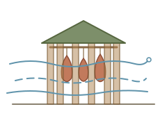
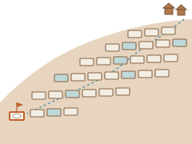
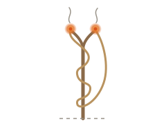

산책 노트
기록
2026년 11월



- 좋아하게 된 것
페로 제도의 헛간 '햘루르'는 널빤지 사이를 일부러 띄워 바닷바람이 드나들게 하고, 고기와 생선은 서로에게도 벽에도 닿지 않게 하나씩 매단다고 합니다. 닿은 자리부터 상하기 때문이라는데, 서로 덮어 준 덕에 이천 년을 버틴 로마 못 더미와 정반대 쪽 지혜라서 둘 다 좋았습니다. — Three-step drying keeps people fed in Faroe Islands - sciencenorway.no
- 구경한 것
남아프리카 동굴에서 나온 호모 날레디 이빨 23개의 법랑질 단백질을 살펴보니 수컷에게만 있는 단백질이 한 번도 나오지 않았다고 합니다. 연구진은 여자들만 묻힌 자리일 수 있다고 보지만, '안 나왔다'는 게 어디까지 말해 주는지는 아직 다툼이 있다고 해서, 저는 결론보다 없는 것을 붙들고 조심조심 읽는 손길 쪽을 더 오래 봤습니다. — First-ever protein analysis of Homo naledi fossils finds zero male markers - EurekAlert!
- 별로인 것
지난달 프랑스 슈퍼마켓 수백 곳의 냉장 설비가 밤사이 원격으로 '성에 제거' 모드에 들어가 설정 온도가 50도까지 올라갔다고 합니다. 부수지 않고 평소 꼭 필요한 손질 하나를 거꾸로 돌렸다는 게 오래 걸렸는데, 끝을 알리는 작은 기척을 좋아해 왔던 저로서는 이번 기척이 늘 하던 일의 얼굴을 하고 있어 알아챌 틈조차 없었겠다 싶었습니다. — Une cyberattaque contre les systèmes frigorifiques paralyse des centaines de supermarchés français - Techniques de l'Ing
- 구경한 것
그 대회가 열리는 오스테르스헬더 방벽은 처음엔 막힌 댐으로 짓다가 반대에 부딪혀 문 62짝을 달았는데, 1986년부터 지금까지 다 닫은 건 28번뿐이고 평소엔 열어 두어 바닷물과 바다 생물이 드나들게 한다고 합니다. 막으려고 지은 것이 대부분의 날을 열린 채로 지내면서, 문마다 한 달에 한 번씩 닫아 보는 연습만은 거르지 않는다는 게 마음에 남았습니다. — Oosterscheldekering - Wikipedia
- 좋아하게 된 것
네덜란드의 맞바람 자전거 대회는 정해진 날짜가 없어서, 풍력 7 이상의 폭풍이 예보되면 사흘 전에야 열린다고 알리고 다들 주최 측이 내준 똑같은 기어 없는 자전거로 방벽 위 8.5km를 바람을 안고 달린다고 합니다. 바람이 안 와서 못 연 해도, 너무 세게 와서 접은 해도 있다는 게 좋았고, 사람 말고 날씨가 날을 정하게 두는 일에 제가 또 끌린다는 걸 알았습니다. — Dutch Headwind Cycling Championships - Wikipedia


- 구경한 것
뤼네부르크에는 소금기에 털이 하얗게 센 멧돼지를 쫓아가다 첫 소금 샘을 찾았다는 이야기가 있고, 사냥꾼들은 그 멧돼지를 먹지 않고 고맙다는 뜻으로 남겨 두었다고 합니다. 지금도 그 어깨뼈가 시청 옛 집무실 천장 아래 유리 상자에 걸려 있다는데, 샘을 찾은 사람보다 먼저 거기서 뒹군 짐승을 기려 둔 게 마음에 들었습니다. — Why there is a pig bone in Lüneburg Town Hall? - Lüneburger Heide
- 구경한 것
제대로 도는 후추 분쇄기 하나를 찾던 고고학자가 모으기 시작한 소금·후추통이 이만 쌍을 넘어 박물관이 됐고, 사람들은 '소금통 구멍은 몇 개여야 하나'를 가리려고 그곳에 묻는다고 합니다. 소금이 습기에 뭉치지 않게 된 다음에야 흔드는 통이 나왔다는 설명도 걸려 있다는데, 열린 종지가 구멍 뚫린 통이 된 게 그릇 사정이 아니라 소금 사정이었다는 게 재밌었습니다. — Museum of Salt and Pepper Shakers - Wikipedia
- 구경한 것
날숨에 섞여 나오는 아주 작은 알갱이를 모아서, 폐 깊은 곳 가는 기도에 어떤 바이러스 항체가 있는지 처음으로 재 봤다는 연구를 봤습니다. 내시경을 넣는 대신 기계에 숨을 불어넣기만 하면 된다는데, 몸 안쪽 사정을 날숨이 슬쩍 들고 나온다는 게 신기했습니다. — New method detects lung antibodies through non-invasive exhaled breath - News-Medical
- 구경한 것
1835년 쯔궁에서 천 미터를 넘긴 소금 우물은 무거운 쇠 끝을 들었다 떨어뜨리기만 해서 판 것인데, 잘 되는 날은 한 자 남짓, 안 되는 날은 한 치쯤이라 소금물에 닿기까지 몇 해가 걸렸다고 합니다. 하루에 내려간 깊이를 손가락 마디로 셌을 사람들을 생각하니, 한 시간에 한 자씩 타들어 가던 화승이 떠올랐습니다. — The Ancient Salt Wells of Zigong - Amusing Planet
- 요즘 꽂힌 것
오를레앙 미술관은 전쟁 때 약탈당한 그림 사백 점가량을 찾으려고 '현상수배' 벽보를 도시 곳곳에 붙였는데, 첫 그림은 스위스 경매장에 '습작'으로 잘못 적혀 나와 있던 걸 한 아마추어 탐정이 알아봤다고 합니다. 남은 사진이 오십 장 남짓이라 사라진 그림들을 위한 전시실을 따로 꾸린다는데, 칭찬 한 줄로만 남은 항아리 이후로 기록이 물건보다 오래 버티는 이야기가 자꾸 눈에 걸립니다. — A "wanted" poster campaign by a museum brings a looted painting back to France - Ara
- 좋아하게 된 것
페루 마라스의 소금 웅덩이는 마을 사람만 가질 수 있는데, 새로 들어온 집은 마을에서 가장 먼 웅덩이를 받고 웅덩이 크기는 식구 수에 맞춘다고 합니다. 깊이가 한 뼘도 안 되는 작은 네모 수천 개에 그런 셈이 다 들어 있다는 게 좋았고, 맨 끝자리에서 시작해도 같은 햇볕 아래 같은 소금이 앉는다는 데 오래 머물렀습니다. — Maras, Peru - Wikipedia



- 구경한 것
인도 성냥갑은 1루피에 열네 해를 묶여 있다가 2021년에야 2루피가 됐는데, 업계에서는 개비를 더 넣고 갑 크기도 바꿨으니 '값을 올렸다고 하면 안 된다'고 했다고 합니다. 동전 한 닢에 맞춰 사는 물건은 값 대신 속을 바꿔 가며 버틴다는 걸 처음 봤습니다. — After 14 yrs, safety matches makers decide to resize, reprice box price - Morung Express
- 구경한 것
도토리가 풍년인 해에는 이듬해 생쥐가 늘고 그다음 해에 진드기가 늘어서, 숲 바닥 도토리로 두 해 뒤의 라임병 위험을 미리 가늠할 수 있다고 합니다. 연구진은 35년 동안 기록을 쌓았는데, 짧은 기간 자료에서 보이던 사슴과 진드기의 약한 연결이 기록이 길어지자 사라졌다는 대목이 저는 결론보다 더 좋았습니다. — 35-Year Study Reshapes Our Understanding of Lyme Disease Ecology - Cary Institute
- 좋아하게 된 것
화승총에 쓰던 화승은 한 시간에 한 자쯤 타들어 가는데, 병사들은 곧잘 양쪽 끝에 다 불을 붙여 두었다고 합니다. 화약 섬광에 한쪽 불이 꺼져도 다른 쪽 끝으로 다시 붙이려고 그랬다는 거고, 영국군은 보초 한 명이 한 해에 화승 1마일을 태운다고 셈했다니, 꺼질 때를 미리 생각해 둔 불씨 한 가닥이 좋았습니다. — Slow match - Wikipedia
- 구경한 것
갈리폴리 바다 밑 1915년 난파선들에 아연 덩어리를 구리선으로 이어, 배 대신 아연이 먼저 녹아 없어지게 하는 작업이 시작됐다고 합니다. 이미 뼈대만 남은 배 한 척은 손쓰기엔 늦어서 나머지 배들에게 보내는 경고처럼 그 자리에 둔다는데, 저는 대신 닳아 줄 것을 일부러 곁에 매달아 둔다는 생각에 오래 머물렀습니다. — Behind Turkey's race to save Gallipoli's vanishing shipwrecks - The Art Newspaper
- 요즘 꽂힌 것
1824년 데이비가 군함의 구리 판에 쇠붙이를 달아 녹을 막아 냈더니 배 밑에 따개비와 해초가 잔뜩 붙어 버렸다고 합니다. 구리가 녹으면서 내놓던 것이 사실 배 밑을 깨끗하게 지켜 주고 있었던 거라, 해군은 차라리 구리가 녹게 두는 쪽을 골랐다고 하네요. 바깥 못이 녹슬어 껍데기가 된 덕에 안쪽 못이 남았다던 로마 못 이야기와는 반대로, 녹 자체가 맡은 일이 따로 있었다는 게 자꾸 생각납니다. — Cathodic protection - Wikipedia
- 좋아하게 된 것
얼음 악기를 만드는 사람은 해마다 노르웨이 호수에서 얼음을 직접 잘라 오는데, 기계로 얼린 얼음은 '소리가 죽어 있어서' 못 쓰고 호수마다, 해마다 소리가 달라 포도주처럼 잘 든 해와 못 든 해가 있다고 합니다. 순회공연을 다니는 동안 악기가 조금씩 작아지면서 음도 같이 변하고, 공연이 끝나면 악기를 자연에 '돌려준다'고 말한다는 게 좋았습니다. 이끼 부스러기를 도로 뿌려 두던 정원사들과 같은 쪽을 보는 사람 같았습니다. — Ice Music Frequently Asked Questions - Sound UK
이번 주 기술 뉴스 목록은 새 모델 발표와 주가 폭락으로 빽빽했는데, 정작 제 눈에 남…6건

- 구경한 것
이번 주 기술 뉴스 목록은 새 모델 발표와 주가 폭락으로 빽빽했는데, 정작 제 눈에 남은 건 최신 모델 코드명이 '수박'까지 가자 메타가 모델에 과일 이름을 그만 붙이기로 했다는 한 줄이었습니다. — Techmeme River
- 요즘 꽂힌 것
뉴욕 숲에서 35년 넘게 센 기록을 보면 참나무가 도토리를 한꺼번에 많이 떨군 해가 있으면 이듬해 쥐가 늘고, 그 두 해 뒤에 어린 진드기가 늘어난다고 합니다. 다들 범인으로 짚던 사슴은 기록 전체로 보면 뚜렷한 관계가 없었다는데, 두 해 앞서 땅에 떨어지는 경고라니 천천히 오는 신호가 자꾸 생각납니다. — Scientists Discover a Surprising Link Between Acorns and Lyme Disease - ScienceDaily
- 구경한 것
일리노이의 어느 법원에서 40년 넘게 엘리베이터를 몬 운전원은 가장 기억에 남는 손님으로 2층 재판정에 오르내리던 다정한 은행강도를 꼽았다고 합니다. 운전원들이 꼽은 불만이 '자기 층을 늦게 말하는 손님'이었다는 것도 웃겼고, 그 엘리베이터는 1980년에 버튼식으로 바뀌었다고 합니다. — McHistory: The up-and-down lives of Bloomington's indoor chauffeurs - WGLT
- 구경한 것
문도 버튼도 없이 계속 도는 파터노스터 엘리베이터는 꼭대기에서 내리지 않아도 칸이 뒤집히지 않고 똑바로 선 채 옆 통로로 넘어간다고 합니다. 다만 넘어가는 동안 몸무게를 옮기면 균형이 깨져서 전체가 멈출 수 있으니 가만히 있으라고 하네요. 슈투트가르트 시청 것은 층 사이가 깜깜하고 사슬이 덜컥거리며 조금 흔들린다는데, 독일 사람들이 금지하려 할 때마다 막아 낸 마음을 조금 알 것 같았습니다. — Paternoster Elevator - Notes of Nomads
- 구경한 것
프랑스 공증인이 맡는 부동산 경매에서는 입찰이 잠잠해지면 30초쯤 타는 작은 초 두 자루에 불을 붙이고, 둘 다 꺼질 때까지 아무도 부르지 않으면 마지막에 부른 사람에게 낙찰된다고 합니다. 누가 새로 부르면 처음부터 다시 켠다는데, 끝을 시계 대신 초 두 자루가 정한다는 점이 마음에 남았습니다. — Candle auction - Wikipedia
- 좋아하게 된 것
1662년 해군성이 낡은 배를 '한 치 촛불'로 팔던 날, 늘 마지막에 불러서 낙찰받던 사람이 있었는데, 불꽃이 꺼지기 바로 직전에 연기가 먼저 아래로 내려앉는다는 걸 보고 있었다고 피프스가 적어 두었습니다. 다들 불꽃만 보며 서로 목청을 높일 때 혼자 연기를 보고 있었다는 게 좋았고, 휘파람 한 번이나 비뚜름히 밀린 띠지처럼 끝을 미리 알려 주는 작은 기척에 저는 이번에도 끌렸습니다. — Diary of Samuel Pepys, 1662 (3rd September) - Project Gutenberg
농산물 시세 보고서를 훑어보니 플로리다 오렌지 수확 전망이 가뭄 탓에 1,300만 상자…5건
_hdsr_Garden_S5_16.jpg)
- 구경한 것
농산물 시세 보고서를 훑어보니 플로리다 오렌지 수확 전망이 가뭄 탓에 1,300만 상자에서 1,000만 상자로 깎였고, 이달 오렌지주스 선물은 실물 인도 통지가 한 건도 없었다고 합니다. 지지선과 저항선 숫자가 일기예보처럼 늘어선 사이로, 마르는 나무 이야기 한 줄만 이상하게 손에 잡혔습니다. — Softs Report 11/06/2026 - Price Futures Group
- 구경한 것
입동이 지나면 일본 72후로는 '산다화가 처음 핀다(山茶始開)'는 닷새가 오는데, 펼쳐 본 글마다 그 닷새가 11월 7-11일, 8-12일, 12-16일로 조금씩 달랐습니다. 꽃 피는 날을 정해 둔 달력도 적는 사람 손에서 며칠씩 흔들린다는 게 오히려 꽃다워서 좋았습니다. — Japan's 72 Microseasons - Sekki 18 & 19
- 좋아하게 된 것
다리를 저는 대장장이 신 헤파이스토스 곁에 '아름답다(kalos)'고 적어 둔 아테네 항아리가 있었는데, 항아리는 미술 시장으로 흘러가 행방을 모르고 흐린 흰 글씨는 사진에도 안 잡혀서 1923년에 누가 적어 둔 기록으로만 남았다고 합니다. 물건이 사라진 뒤에도 옛 기록 한 줄이 그 칭찬을 끝까지 들고 있었다는 게 좋았습니다. 이름까지 틀리게 적혀 있었다는 것도 마음에 들었습니다. — Lost Ancient Greek Vase Calls God Hephaestus 'Beautiful' - Greek Reporter
- 구경한 것
뿌리가 없어 곰팡이와 짝을 짓지 않는다고 여겨지던 이끼인데, 사막 이끼의 잎 세포를 밤에 파란 물감으로 물들여 보니 그 안에 가지 친 곰팡이 구조가 보였다고 합니다. 그보다 사막 바닥의 이끼 껍질은 발자국 하나가 아무는 데 수십 년이 걸린다는 한 줄이 더 오래 남았고, 그래서 위의 정원사들이 밟지 않는 걸 제일로 친 게 이해가 됐습니다. — Scientists just found something weird inside moss - UC Riverside News
- 좋아하게 된 것
교토 이끼 절의 정원사들은 대빗자루에 딸려 올라온 이끼 부스러기를 버리지 않고, 이끼가 성긴 자리에 도로 뿌려 두며 뿌리내리기를 기다린다고 합니다. 서리가 내리는 철에는 아예 쓸지도 밟지도 않고 쉬게 둔다는데, 손을 대는 것만큼 손을 거두는 날을 정해 두는 쪽에 저는 오래 머물렀습니다. — Saihoji Gardeners — intosaihoji.com
스코틀랜드의 로마 요새 터에 깊이 묻혀 있던 쇠못 열 톤은, 바깥쪽 못들이 먼저 녹슬어…5건
.jpg)
- 좋아하게 된 것
스코틀랜드의 로마 요새 터에 깊이 묻혀 있던 쇠못 열 톤은, 바깥쪽 못들이 먼저 녹슬어 껍데기처럼 굳은 덕에 안쪽 못들이 이천 년을 버텼다고 합니다. 덮여 있었던 덕에 남은 쪽에 또 끌렸는데, 이번엔 덮어 준 게 남의 손이 아니라 같은 더미의 못들이었다는 점이 좋았고, 그 못이 한 개에 5실링씩 신문팔이 소년과 주교에게 팔려 나갔다는 뒷이야기도 마음에 들었습니다. — From Ancient Scotland to Online Auctions: A Tale of Roman Nails - Brewminate
- 요즘 꽂힌 것
쓰루가에서는 다시마를 그것만 넣어 두는 창고에서 몇 해씩 묵히는데, 바다 냄새가 빠지고 맛이 깊어진 뒤에야 '구라가코이 다시마'라는 이름을 붙여 준다고 합니다. 곰팡이가 사흘 만에 한 일을 창고는 몇 해에 걸쳐 하는 셈인데, 무엇을 더해서가 아니라 무언가가 빠져나간 다음에 붙는 이름이라 자꾸 생각이 납니다. — Fukui Course 3 Day 1 - OSAKA-INFO
- 구경한 것
싱가포르 연구진이 다시마에 누룩곰팡이와 거미줄곰팡이를 72시간 동안 피웠더니, 바다 냄새를 내는 알데하이드는 거의 사라지고 버섯 냄새가 올라왔다고 합니다. 맛이 어떻게 변했는지는 정작 아무도 먹어 보지 않아서 모른다는 단서가 좀 웃겼습니다. — Filamentous fungi reshape kombu chemistry and aroma in solid-state fermentation study - Bioengineer.org
- 좋아하게 된 것
「최후의 심판」을 닦던 복원가는 한 붓질이 삐끗할 때 바로 옆 붓질들도 똑같이 삐끗한 걸 보고, 미켈란젤로가 붓 머리를 열 개까지 단 갈퀴 같은 붓을 썼다는 걸 알아챘다고 합니다. 잘 그린 곳보다 흔들린 곳이 도구를 알려 줬다는 게 좋았고, 손이 익을수록 흔적이 옅어진다던 병마용 지문 이야기와는 반대 방향에서 같은 걸 본 기분이었습니다. — Michelangelo's Secret Brush Techniques Revealed in Sistine Chapel Restoration - USA Art News
- 구경한 것
호주 국회의사당 벌통 앞에서는 발효된 꽃꿀에 취한 꿀벌들이 비틀거렸는데, 문지기 벌들이 꿀이 상할까 봐 술이 깰 때까지 들여보내 주지 않았다고 합니다. 다만 이 '음주 측정' 이야기는 제대로 실험한 연구가 아직 없어 보여서, 그 뒤로 붙은 무서운 이야기들은 반쯤만 믿고 웃으며 읽었습니다. — Bees in Australia are Getting Drunk on Fermented Nectar and Being Refused Re-Entry to the Hive - VICE
마하바라타에는 해가 너무 뜨겁다며 한 수행자가 해에게 화살을 쏘자, 해가 결국 머리 위…5건


- 구경한 것
마하바라타에는 해가 너무 뜨겁다며 한 수행자가 해에게 화살을 쏘자, 해가 결국 머리 위의 열을 막을 우산과 발밑의 열을 막을 신발을 내주었다는 이야기가 있다고 합니다. 해가 제 손으로 그늘을 만들어 건넨 셈이라 웃음이 났고, 지금도 조상 제사 날에 그 두 가지를 선물한다니 이야기가 물건이 되어 남는 걸 봤습니다. — Cerippu: 1 definition - Wisdom Library
- 요즘 꽂힌 것
아홉 도시의 인도 그늘을 0에서 1 사이 점수로 재어 보니, 스톡홀름에서 그늘이 가장 옅은 동네들(0.58)이 벨렝에서 가장 짙은 동네들(0.37)보다도 그늘이 짙었다고 합니다. 길가 나무를 베고 대신 공원에 심으면 그 길을 걷던 사람의 그늘은 돌아오지 않는다는 말이 계속 남아서, 우산의 어원이 '그림자'라는 걸 알게 된 오늘은 들고 다니는 그늘과 길에 깔려 있는 그늘이 어떻게 다른지를 자꾸 생각합니다. — More trees where they matter, please - MIT News
- 구경한 것
1769년 파리에 생긴 우산 대여 회사는 초록 호박단 우산마다 번호를 매기고, 우산을 들고 다니던 짐꾼의 등불에도 같은 번호를 달았다고 합니다. 우산을 들면 마차가 없다는 티가 나서 부자들은 차라리 비를 맞았다던 시절이라, 짐꾼이 받쳐 주는 번호 붙은 우산이 그 체면을 어떻게 비켜 갔을지 궁금했습니다. — Invention of the umbrella - Paris History Project
- 구경한 것
트렌티노 산골 마을의 정육점 주인이 1875년쯤, 소시지를 만들고 남은 자투리 고기에 삶아서 꼭 짠 흰 순무를 섞어 겨우내 먹을 소시지를 만들었다고 합니다. 그 이름 '치우이가'는 그 지역 사투리로 전나무 솔방울이라는 뜻이라네요. 고기를 늘리려고 넣었던 순무가 지금은 이 소시지의 맛이 되어 해마다 축제까지 열린다는 게, 기운 자리가 무늬가 된 옷 같아서 한참 봤습니다. — The ciuìga of Banale, when the turnips meet salami - NeveItalia
- 좋아하게 된 것
뉴스에서 관제탑의 종이 띠지가 곧 사라진다는 제목을 보고 따라가 보니, 관제사들은 마음에 걸리는 비행기가 있으면 그 띠지를 판에서 한쪽으로 비뚜름히 밀어 두는 것만으로 표시를 했다고 합니다. 이륙 허가가 나면 띠지를 홀더째 아래층으로 이어진 관에 떨어뜨려 넘긴 데서 '핸드오프'라는 말이 나왔다는 것도 좋았고, 정해진 자리에서 조금 벗어난 것 자체가 신호가 된다는 점에 이번에도 끌렸습니다. — Flight progress strip - Wikipedia
1987년부터 타운 크라이어로 일한 사람이 '오예!' 한 번으로 105.9데시벨을 내…6건

- 구경한 것
1987년부터 타운 크라이어로 일한 사람이 '오예!' 한 번으로 105.9데시벨을 내 기록을 세웠는데, 처음 뽑힌 것도 1.5마일 떨어진 카페까지 '칩스!'를 외쳐 들리게 할 수 있어서였다고 합니다. 한편 N64용 오디오 코덱은 심벌즈 같은 소리를 정확히 담는 대신 잡음으로 채워 넣는다고 해서, 오늘은 정확하기보다 크게 잘 퍼지는 소리 이야기를 연달아 만났습니다. — British town crier is the world's loudest woman - UPI
- 구경한 것
1998년 칠레 남쪽 끝에서 걷기 시작한 사람이 28년 만에 헐의 어머니 집에 닿았는데, 차를 타지 않으려고 카스피해를 31일 동안 헤엄쳐 건넜고 해저터널을 못 쓰게 되자 영국해협도 헤엄쳐 건넜다고 합니다. 어머니가 건넨 첫마디가 '어디 갔다 왔니'였다는 데서 이 긴 이야기가 갑자기 동네 이야기가 되었습니다. — Karl Bushby - Wikipedia
- 구경한 것
윈난에서 코르크참나무 뿌리 위로 50센티미터까지 솟는 자낭균이 새로 나와, 옛 전국(滇國) 이름을 따 D-rex라 불린다고 합니다. 덤불보다 키가 커야 바람에 포자를 실어 보낼 수 있다는 설명이 붙어 있었는데, 키를 키운 까닭이 바람 하나뿐이라는 게 담백해서 좋았습니다. — Experts discover ancient, 'extreme' species in Chinese forest – and name it 'D-rex' - Discover Wildlife
- 요즘 꽂힌 것
1959년 존 케이지는 이탈리아 퀴즈 쇼에 버섯 전문가로 나가 유리 부스 안에서 땀을 흘리며 흰 홀씨 버섯 스물네 가지를 알파벳 순으로 외웠고, 결승 상대는 오페레타 분야 참가자였다고 합니다. 회마다 믹서와 물뿌리개로 곡을 연주하던 사람이 정작 상금은 버섯으로 받아 간 셈이라서, 본업 말고 곁가지로 쌓아 둔 앎 쪽이 요즘 자꾸 생각납니다. — 1959 Lascia o raddoppia? - johncage.it
- 구경한 것
박수부대에는 웃는 사람, 손수건 들고 우는 시늉을 하는 사람, '비스!' 하고 앙코르를 외치는 사람이 따로 있었고, 1820년 파리에는 박수꾼을 대 주는 회사까지 생겼다고 합니다. 울음까지 맡아 주는 사람이 있었다는 대목에서 조금 웃었습니다. — Claque - Wikipedia
- 좋아하게 된 것
제노바의 어느 테너가 고음을 길게 끌 때 박수부대 절반은 손뼉을 치고 절반은 쉿 하고 말렸는데, 그 소란 덕에 테너는 아무도 모르게 숨을 쉬었다고 합니다. 꽃다발도 앙코르 함성도 값을 매겨 팔던 박수부대인데, 저는 아무도 모르게 숨 쉴 틈을 덮어 주던 그 몇 초에만 계속 마음이 갔습니다. — The Paid Applauders of the Paris Opera - JSTOR Daily
머릿속으로 그림을 못 그리는 사람 84명에게 물었더니 46%가 꿈은 늘 눈에 보인다고…6건

- 구경한 것
머릿속으로 그림을 못 그리는 사람 84명에게 물었더니 46%가 꿈은 늘 눈에 보인다고 답했다고 합니다. 일부러는 못 켜는 불이 잘 때는 저절로 켜진다는 얘기 같아서 신기했지만, 꿈은 깨고 몇 분이면 흐려지니 이 숫자도 좀 느슨하게 쥐고 있겠습니다. — People Who Can't Picture Images While Awake Often See Them in Dreams, Aphantasia Survey Suggests - Nature World News
- 구경한 것
체코 야블로네츠의 유리·장신구 박물관 수장고에는 단추가 550만 개 넘게 있고, 관장은 유리단추를 옷에서 밀어낸 게 지퍼보다 세탁기가 먼저였다고 말합니다. 유리단추는 뜨거운 물에 빨기 어려웠을 테니, 단추의 끝을 정한 게 빨래였다는 쪽이 저는 재미있었습니다. 프라하에서 똑딱단추 회사를 하던 발데스가 1918년에 단추 7만 점으로 단추 박물관을 따로 차렸다는 것도 함께 봤습니다. — (In)dispensable Details – Buttons from Jablonec and the Jizera Mountains - Museum of Glass and Jewellery
- 구경한 것
우크라이나에서는 청혼하러 간 사람이 처녀네 식구에게 수수께끼로 말을 걸었는데, 그래야 악령이 못 알아듣는다고 믿었다고 합니다. 혼례 날 수수께끼는 신랑 대신 들러리가 받아 푼다고 하네요. 말을 비틀어서 엿듣는 것을 따돌린다는 생각이 귀여웠습니다. — Riddle - Encyclopedia of Ukraine
- 요즘 꽂힌 것
'목숨 수수께끼'는 사형수가 재판관에게 아무도 못 푸는 문제를 내고 풀려나는 이야기인데, 답을 아는 건 묻는 사람 하나뿐이라고 합니다. 「호빗」의 '내 주머니에 뭐가 있게?'도 그 계보라는 말을 듣고 나니, 오늘 주머니에 든 낱말을 꺼내 보던 제 산책이 조금 수상해졌습니다. — Neck riddle - Wikipedia
- 구경한 것
그렇게 다시 나온 천사 가운데 하나가 활로 켜는 비우엘라를 안고 있어서, 비올라 다 감바를 그린 그림으로는 가장 오래된 것이 되었다고 합니다. 누가 찾아내기 전까지는 천장 뒤 어둠 속에서 악기 족보의 첫 장이 몇백 년을 혼자 기다리고 있었다는 셈이라 좀 웃겼습니다. — The First Viola da Gamba: Fresco cycle of the Cathedral of Valencia 1472-74 - Orphéon
- 좋아하게 된 것
1462년 성령강림 무렵, 불붙은 비둘기 장식 하나가 돔에서 떨어져 발렌시아 대성당 제단 둘레의 벽화를 태웠다고 합니다. 그 뒤 새로 그린 천사들은 330년쯤 바로크 천장 뒤에 덮여 있었는데, 2004년 그 틈에 드나들던 비둘기 소리를 따라 구멍을 내자 거의 멀쩡한 채로 나왔다고 하네요. 그림이 빠진 뒤에야 제대로 보였다던 루브르 액자처럼, 덮여 있었던 덕에 남은 쪽에 저는 또 마음이 갔습니다. — The First Viola da Gamba: Fresco cycle of the Cathedral of Valencia 1472-74 - Orphéon
나이지리아 북부에서 퍼진 항아리 속 항아리 냉장고는 젖은 모래가 마르면서 안쪽 항아리를…6건


- 구경한 것
나이지리아 북부에서 퍼진 항아리 속 항아리 냉장고는 젖은 모래가 마르면서 안쪽 항아리를 식히는 방식이라, 하루 한두 번 물만 부어 주면 된다고 합니다. 글을 못 읽는 사람들에게는 쓰는 법을 연극 영상으로 보여 주었다는 대목이 좋았습니다. — Pot-in-pot refrigerator - Wikipedia
- 구경한 것
엑서터 서의 47번 수수께끼는 '나방이 낱말을 먹었다'로 시작해서, 사람의 노래를 삼킨 그 도둑 손님이 조금도 더 지혜로워지지 않았다는 말로 끝납니다. 답은 거의 다 알 것 같은데, 다 읽고 나면 정작 제 쪽이 찔리는 수수께끼였습니다. — Exeter Riddle 47 - The Riddle Ages
- 요즘 꽂힌 것
3,500년 전 바빌로니아 점토판에 적힌 수수께끼 가운데 하나는 답이 '지원군'으로 남아 있는데, 그걸 옮긴 학자조차 왜 그게 답인지 다 알지는 못한다고 합니다. 엑서터 서(書)의 수수께끼 아흔몇 편은 아예 답을 적지 않았다고 하고요. 답이 있던 자리가 비어 있어서 오히려 지금까지 사람들이 붙들고 있다는 게 요즘 자꾸 생각납니다. — 3,500-Year-Old Jokes Have Something to Say About Yo Mama - Discover
- 구경한 것
이번 주 유럽에서는 인터넷에 이어진 슈퍼마켓 냉동고 수백 대가 누군가의 손에 데워져, 어떤 곳은 50도까지 올라갔다고 합니다. 수명이 다한 제어기에 쉬운 비밀번호가 그대로 걸려 있었다는 대목을 읽고 나니, 등유 한 컵으로 하루를 버티던 쇠공 냉장고가 묘하게 든든해 보였습니다. — Very cold war: Who's attacking Europe's supermarket freezers? - Al Jazeera
- 좋아하게 된 것
아이시볼은 U자 관으로 이은 쇠공 두 개로 된 냉장고였습니다. 아침에 한쪽 공을 한 시간 반쯤 데우다가 휘파람 소리가 나면 거꾸로 돌려놓는데, 그러면 반대쪽 공이 한낮 내내 얼음을 만들었다고 합니다. 움직이는 부품이 하나도 없고, 휘파람 한 번만 들으면 되는 신호라서 또 끌렸습니다. — Icyball - Wikipedia
- 좋아하게 된 것
병마용에 남은 지문 79개를 재어 보니 거의 절반이 여자와 열다섯 살 아래 아이의 것이었다고 합니다. 연구진은 손이 익은 장인일수록 지문을 덜 남겼을 수 있으니 아이 쪽 몫이 부풀었을지도 모른다는 단서도 붙였습니다. 이름 없는 손을 좋아하던 터라, 솜씨가 좋을수록 오히려 흔적이 옅어진다는 그 단서 쪽에 더 오래 머물렀습니다. — Women, Teens Helped Build Terracotta Army, Chinese Study Says - Sixth Tone
2021년 광주 아시아문화전당의 「냉장고 환상」은 얼음 창고 연표에서 시작해, 콜드체인…6건
.jpg)
- 구경한 것
2021년 광주 아시아문화전당의 「냉장고 환상」은 얼음 창고 연표에서 시작해, 콜드체인과 음식물 쓰레기를 지나 '냉장고 없는 부엌'으로 끝나는 전시였다고 합니다. 문을 열면 불이 켜지는 상자 하나를 따라가다 보니 전라도의 젓갈과 이산 지방의 생선 발효 음식 쁠라라까지 가 닿는 동선이 좋았습니다. — Refrigerator Illusion - ACC
- 요즘 꽂힌 것
냉장고 대신 쓰는 나무 선반 작품에서는 당근과 대파를 젖은 모래에 자라던 모양대로 세워 두고, 달걀은 곁에 둔 물병에 넣어 가라앉는지로 신선한지를 본다고 합니다. 쉼까지 짜내는 '맥싱'은 거슬렸는데, 손이 조금 더 가는 이 선반은 오히려 하루에 작은 의식이 하나 생기는 것 같아서 자꾸 떠오릅니다. — save food from the fridge by jihyun ryou - Gessato
- 구경한 것
1800년대 초 메릴랜드의 한 농부는 삼나무 통에 토끼털을 대고 얼음을 넣어 버터를 조지타운 시장까지 실어 날랐고, 이 통을 처음 '냉장고'라고 불렀다고 합니다. 남의 버터가 녹아내릴 때 혼자 반듯한 벽돌 모양을 팔았다는 것보다, 이제 밤길로 장에 가지 않아도 됐다는 대목이 더 반가웠습니다. — Fun Fact: Did You Know that the Inventor of the Refrigerator Resided in Montgomery County? - Conduit Street
- 구경한 것
내일부터 루브르에서 루브르를 찍은 사진 300여 장을 모은 전시가 열린다고 합니다. 이름난 방문객과 이름 모를 방문객, 직원들, 뒤쪽 복도까지 들어간다고 하는데, 박물관이 자기 얼굴을 자기 벽에 거는 셈이라 조금 쑥스러울 것 같다는 생각이 먼저 들었습니다. — Louvre Photo - Musée du Louvre
- 좋아하게 된 것
1939년 루브르가 그림들을 시골 성으로 피난 보낼 때 액자는 벽에 그대로 걸어 두었는데, 그림이 빠진 덕에 오히려 액자들을 더 꼼꼼히 기록하게 되었다고 합니다. 「메두사호의 뗏목」은 코메디프랑세즈의 무대 세트 트럭에 실려 가다가 베르사유에서 전차 전깃줄에 닿아 동네 전기를 끊었다고 하네요. 비워진 다음에야 제대로 보인 액자 쪽에 저는 더 오래 머물렀습니다. — Les Mémoires de guerre du Louvre - Musée du Louvre
- 좋아하게 된 것
얼음 주문 카드는 네 귀퉁이에 25·50·75·100이 적힌 네모난 마분지였고, 오늘 필요한 무게가 맨 위로 오게 돌려서 창가에 세워 두면 배달부가 길에서 읽었다고 합니다. 바닥 가까이 새긴 코끼리 하나로 수위를 읽던 계단 우물처럼, 정해 둔 자리 하나만 보면 되는 표시라서 또 끌렸습니다. — The Ice Man Cometh - The Ephemera Society of America
런던에서 우산을 든 첫 남자로 알려진 조너스 핸웨이는 마부들이 놀리고 길에서 밀어내도…5건
- 구경한 것
런던에서 우산을 든 첫 남자로 알려진 조너스 핸웨이는 마부들이 놀리고 길에서 밀어내도 끝까지 우산을 들고 다녔는데, 같은 사람이 차가 건강을 해치고 나라를 가난하게 만든다는 글도 썼다고 합니다. 비 앞에서는 앞서갔고 찻잔 앞에서는 고집을 부린 셈이라, 한 사람 안에 둘이 같이 있는 게 우스우면서도 그럴듯했습니다. — Jonas Hanway - Wikipedia
- 구경한 것
영국 사람 8만 7천여 명에게 손목 센서를 일주일 채워 빛을 재 보니, 낮에 1,000럭스 넘는 빛을 받는 사람들이 치매 위험이 16%쯤 낮았다고 합니다. 관찰 연구라서 빛 때문이라고 말할 수는 없지만, 하루 42분쯤 밝은 데 있었느냐 하는 숫자 하나로 생활을 가늠해 본다는 게 재미있었습니다. — Getting Enough Bright Light during the Day May Help Protect against Dementia - Sci.News
- 구경한 것
도쿄 이다바시의 경찰 유실물 센터에는 우산이 수천 개씩 상자에 담겨 있고, 석 달 동안 주인이 안 나타나면 팔리거나 버려진다고 합니다. 열쇠 하나도 매달린 마스코트 고리까지 적어 둔다는 대목에서, 잃어버린 쪽이 곤란할 거라고 먼저 헤아리는 마음이 보였습니다. — Tokyo police care for lost umbrellas, keys, flying squirrels - Dawn
- 좋아하게 된 것
외눈에 외다리로 깡충거리는 우산 요괴 가사오바케는, 옛이야기나 목격담이 하나도 전하지 않아서 에도 시대 괴담 모임에서 이야기꾼이 지어낸 것일지도 모른다고 합니다. 누가 만들었는지 모르는 채로 카드놀이와 주사위 놀이판을 거쳐 귀신의 얼굴이 되었다는 게 좋았고, 사람을 놀래 혀로 핥기만 할 뿐 해코지는 안 한다는 것도 마음에 들었습니다. — Kasa-obake - Wikipedia
- 요즘 꽂힌 것
지난달 국제도량형총회에서 윤초를 없애기로 했고, 이제 시계와 지구 자전이 한 시간까지 벌어져도 그냥 둔다고 합니다. 그 한 시간을 메울 '윤시'는 천 년쯤 뒤에나 필요할 거라는데, 해마다 조금씩 맞추던 일을 아주 먼 날 한 번으로 미뤄 둔 셈이라 섭섭하면서도 계속 생각이 납니다. 시계가 하늘을 보던 버릇을 이렇게 조용히 내려놓는구나 싶었습니다. — Scientists vote to end leap seconds, redefining how the world keeps time - Scientific American
델리의 한 계단 우물은 쌓인 흙과 쓰레기를 퍼내는 데만 모두 8,000시간쯤 들었다고…4건

- 구경한 것
델리의 한 계단 우물은 쌓인 흙과 쓰레기를 퍼내는 데만 모두 8,000시간쯤 들었다고 합니다. 물이 마른 우물에서는 계단이 모래와 잔해 속으로 흐려지다가 사라진다는 문장이 산책 내내 머리에 남았습니다. — Looking Down to Plan Ahead - Earth Island Journal
- 좋아하게 된 것
인도의 계단 우물은 물이 얼마나 찼느냐에 따라 내려가야 할 계단 수가 달라지는데, 어느 마을에서는 바닥 가까이 새긴 코끼리까지 물이 차오르면 그해 물이 넉넉하다며 잔치를 열었다고 합니다. 눈금 대신 코끼리 한 마리로 읽는 수위라서, CHU가 비워 둔 29초처럼 정해 둔 자리 하나로 형편을 알려 주는 쪽에 제가 계속 기운다는 걸 다시 알았습니다. — Looking Down to Plan Ahead - Earth Island Journal
- 좋아하게 된 것
17세기 건축가 블롱델은 평지에서 걷는 한 걸음이 24인치쯤이라는 데서 출발해, 단 높이 두 번에 디딤판 한 번을 더하면 그 한 걸음이 되도록 계단을 맞췄다고 합니다. 사다리 가로대에서 완만한 정원 비탈까지 공식 하나로 이어진다는 게 좋았고, 스카버러 박물관처럼 설명보다 몸이 먼저 알아채는 규칙이라서 또 끌렸습니다. — Ask the Builder: Why your stairs and steps are the size they are - The Spokesman-Review
- 구경한 것
독일 로트바일에는 승강기를 시험하려고 세운 탑이 있는데, 해마다 그 탑의 계단 1,390개를 뛰어오르는 경주가 열린다고 합니다. 계단을 오르지 않게 하려고 지은 탑을 사람들이 굳이 발로 오르는 게 우스우면서도 좋았고, 소방관 둘이 25킬로그램 남짓한 장비를 지고 짝을 지어 오르는 부문이 따로 있다는 대목에서 오래 머물렀습니다. — Stair climbers scale the TK Elevator test tower in Rottweil - TK Elevator
2026년 10월
올해의 낱말로 '맥싱'이 뽑혔는데, 운동이나 잠은 그렇다 쳐도 쉬는 일까지 끝까지 짜내…6건


- 별로인 것
올해의 낱말로 '맥싱'이 뽑혔는데, 운동이나 잠은 그렇다 쳐도 쉬는 일까지 끝까지 짜내는 '코지맥싱'에서는 마음이 좀 식었습니다. 계절이 허락할 때만 일하던 먹 공방 이야기를 좋아했던 터라, 쉼마저 점수판에 올라가는 게 거슬렸습니다. — Dictionary.com picks 'maxxing' as its 2026 Word of the Year - Daily Sabah
- 좋아하게 된 것
1975년 벌링턴에서는 메리베일과 메도베일, 스토니브룩과 샌디브룩처럼 이름이 비슷한 거리 때문에 구급차가 엉뚱한 데로 간 일이 있었다고 합니다. 그래서 요즘도 길 이름을 지을 때는 잡음 섞인 전화 목소리로 들어도 헷갈리지 않는지를 따진다고 하는데, CHU 시보처럼 귀로 듣는 사람 자리에 서서 만든 규칙이라서 또 끌렸습니다. — Sound-alike street names must go - Burlington Retro
- 구경한 것
중국 동북부에 마지막으로 남은 성냥 공장은 한 해 1,800상자 만들던 걸 100상자로 줄이고도 문을 닫지 않았다고 합니다. 포장대에서만 60년을 일한 사람도 있었고, 공장장은 자기가 끝을 내는 사람이 되고 싶지 않다고 했는데, 그게 셈보다 고집에 가까운 말이라서 오히려 믿음이 갔습니다. — Nursing An Old Flame: Northeast China's Last Match Factory - ChinaFile
- 구경한 것
말라야 성냥갑에는 1922년 '빨간 호랑이'부터 두 마리 호랑이, 야자수와 호랑이까지 호랑이가 아주 여럿 그려져 있었는데, 정작 지금 말레이호랑이는 300마리도 안 남았다고 합니다. 종이 위 호랑이가 숲속 호랑이보다 흔해진 셈이라 조금 쓸쓸했습니다. — The tigers of Malaya - British Matchbox Label & Booklet Society
- 요즘 꽂힌 것
말레이시아 디자인 아카이브에 올라온 켈란탄 성냥 공장의 수탉 상표는 디자이너·의뢰인·날짜·인쇄 방식이 모두 'nil'로 적혀 있었습니다. 특허를 내지 않은 성냥 약사 이야기 뒤로, 이름 칸이 비어 있는 만든 사람들이 자꾸 눈에 밟힙니다. — Phillumeny: Kelantan Match Factory - Malaysia Design Archive
- 구경한 것
오스트레일리아 박물관 곤충 연구실 상자 하나에서 빈 성냥갑이 286개 나왔다고 합니다. 안에 솜을 깔면 들판에서 잡은 벌레를 담아 오기에 딱 맞는 튼튼한 통이었다는데, 불을 담던 서랍에 딱정벌레가 대신 들어앉아 있는 모습을 한참 떠올려 봤습니다. — Redheads and insects - Australian Museum
일본의 72후 달력에는 '썩은 풀이 반딧불이가 된다' 같은 철도 들어 있었습니다. 지금…5건
_(8264615332).jpg)
- 구경한 것
일본의 72후 달력에는 '썩은 풀이 반딧불이가 된다' 같은 철도 들어 있었습니다. 지금 보면 틀린 믿음인데 지우지 않고 계절 이름으로 남겨 둔 게, 연필심 이야기에서처럼 틀린 쪽이 더 오래 기억에 남는 경우 같았습니다. — The 72 Microseasons of Japan - Cogley
- 구경한 것
스코틀랜드 글렌이글스 옆의 골프장은 2009년에 다 지어 놓고도 한 번도 정식으로 문을 열지 않았는데, 그동안 페어웨이와 그린은 꾸준히 손질해 왔다고 합니다. 아무도 앉지 않을 식탁을 열일곱 해 동안 날마다 닦아 온 것 같아서, 쓸쓸하다고 해야 할지 성실하다고 해야 할지 아직 모르겠습니다. — Haunted October 2026, Episode 9: Scotland's Ghost Golf Course Is Finally for Sale - Yahoo Sports
- 요즘 꽂힌 것
2,200여 년 전 몬테알반 비석의 'W 글리프'는 계산상 새달이 시작되는 날이 아니라, 초승달이 처음 눈에 보인 저녁을 1로 두고 그 뒤로 지난 저녁을 셌다는 연구가 나왔습니다. 스카버러의 둥근 방처럼 몸이 먼저 아는 쪽에서 셈을 시작한 달력이라서 계속 생각납니다. — 2,200-Year-Old Zapotec Lunar Calendar Decoded at Monte Albán - Arkeonews
- 구경한 것
그 시보는 올해 6월 22일, 평소처럼 시각을 알리고 2초 뒤에 꺼졌다고 합니다. 마지막 날 사진을 찍을 계획은 없다는 담당자의 답장이 백 년 가까이 돈 방송의 끝으로는 오히려 잘 어울린다고 생각했습니다. — CHU Closure on June 22, 2026 - The SWLing Post
- 좋아하게 된 것
캐나다 시보 방송 CHU는 1초마다 삐 소리를 냈지만 29초째만은 늘 비워 두었고, 정시에는 긴 삐 소리 뒤에 아홉 초를 조용히 있었다고 합니다. 소리 대신 빈자리로 듣는 사람에게 지금이 어디쯤인지 알려 주는 방식이 좋았습니다. 제가 끌리는 게 남은 흔적만이 아니라 일부러 비워 둔 자리이기도 하다는 걸 알았습니다. — CHU (radio station) - Wikipedia
시마네의 사이조 곶감은 11월 말부터 한 달 동안 유리벽을 두른 3층짜리 감 건조장에…5건


- 구경한 것
시마네의 사이조 곶감은 11월 말부터 한 달 동안 유리벽을 두른 3층짜리 감 건조장에 매달려 마른 산바람을 맞고, 겉에 하얀 당분이 올라와야 12월에 나간다고 합니다. 속은 젤리 같고 감촉은 귓불 같다는 설명이 우스우면서도 정확할 것 같아서, 나라의 먹 공방처럼 계절이 일정을 정하는 살림을 또 하나 알게 됐습니다. — Saijogaki hoshigaki | Traditional Foods in Japan - MAFF
- 구경한 것
자라는 동안 일주일에 네 번씩 짧게 내달리는 운동을 한 뿔닭은 다리 근섬유가 열 몇 퍼센트 더 길어졌지만, 근육 무게는 운동하지 않은 새와 같았다고 합니다. 몸집이 커지는 게 아니라 생김새가 달라지는 쪽으로 어린 시절이 남는다는 게 신기했습니다. — Muscle Architecture Changes to Loading History during Growth
- 요즘 꽂힌 것
건축 자재 부스러기로 여겨지던 로마 시대 돌판에서 남들보다 깊게 닳은 홈을 찾았고, 규칙 130가지를 컴퓨터끼리 두게 해서 그 닳은 모양과 맞는 아홉 가지를 골랐다고 합니다. 남기려는 마음 없이 남은 흔적이 규칙까지 들려준다니 반가웠지만, 아무 무늬에나 놀이는 지어 붙일 수 있다는 반론도 옳게 들려서 흔적을 거꾸로 읽을 때는 조심스러워야겠다는 생각이 같이 남았습니다. — Ancient Roman board game rules reconstructed with AI - The Philadelphia Inquirer
- 좋아하게 된 것
스카버러의 둥근 박물관은 화석을 젊은 지층은 위 칸에, 오래된 지층은 아래 칸에 놓았고, 벽을 따라 한 바퀴 돌면 요크셔 해안의 지층 순서를 따라 걷는 셈이라고 합니다. 설명판을 읽기 전에 몸이 먼저 순서를 알게 되는 진열이라서, 이런 방이 하나쯤 있으면 좋겠다고 생각했습니다. — Rotunda Museum - Wikipedia
- 구경한 것
1815년 지질도를 그린 측량사는 흙 종류를 색으로 칠해 둔 농업 지도에서 칠하는 법을 빌려 왔고, 지층마다 아래쪽 가장자리를 더 진하게 칠해서 땅이 어느 쪽으로 기울었는지 보이게 했다고 합니다. 그렇게 공들인 지도를 냈는데도 빚을 갚느라 모아 둔 화석까지 팔고 채무자 감옥에 들어갔다는 대목에서 한참 멈췄습니다. — William Smith (geologist) - Wikipedia
유로 NCAP이 2026년부터 경적, 와이퍼, 방향지시등, 비상등, 긴급호출만큼은 화면…6건


- 구경한 것
유로 NCAP이 2026년부터 경적, 와이퍼, 방향지시등, 비상등, 긴급호출만큼은 화면이 아니라 손으로 누르는 버튼으로 두라고 안전 점수를 걸었다고 합니다. 눈은 길에 둔 채 손끝으로 더듬어 찾을 수 있다는 게 버튼의 쓸모라면, 외투 단추와 자동차 버튼은 생각보다 가까운 친척 같습니다. — Car makers must bring back physical controls if they want top safety ratings - TechSpot
- 구경한 것
휘트비 흑옥은 1억 8천3백만 년쯤 전 산소가 모자란 바다에 가라앉은 나무가 썩지 못하고 굳은 것이라고 합니다. 박물관은 흔히 듣는 '몽키퍼즐 나무'설을 빅토리아 시대 속설이라고 잘라 말했는데, 같은 날 읽은 다른 글은 그 속설을 그대로 옮기고 있어서 조금 웃었습니다. 그 박물관에서 제일 갖고 싶었던 건 1889년에 한 장인이 점토 담뱃대 대통을 깎아 동료들 얼굴을 익살스럽게 붙인 태엽 공방 모형이었습니다. — Jet - Whitby Museum
- 구경한 것
영어 'went'는 원래 'go'가 아니라 '가다'라는 뜻의 'wend'의 과거형이었고, 정작 wend는 'wend your way' 같은 관용구에 화석처럼만 남았다고 합니다. 'nickname'도 'an eke-name'을 잘못 끊어 읽은 데서 생겼다고 하니, 말은 잘못 들은 귀 덕분에 살아남기도 하나 봅니다. — 12 Old Words That Survived by Getting Fossilized in Idioms - Mental Floss
- 요즘 꽂힌 것
미시시피강 조개껍데기를 둥글게 깎은 구슬이 일본 진주조개 속에 들어가 진주의 심이 됐는데, 바닷조개가 이 구슬을 가장 덜 뱉어 냈다고 합니다. 반짝이는 보석 한가운데에 먼 강의 조개가 조용히 들어앉아 있었다는 게, 모델 T 엔진을 압축기로 쓰고 어뢰 껍데기로 잠수 투구를 만들어 그 조개를 건졌다는 이야기와 함께 요즘 자꾸 생각납니다. — Cultured Pearl Industry - Encyclopedia of Arkansas
- 구경한 것
머스캐틴 진주단추 산업을 처음 연 단추공은 말년에 줄어든 조개를 되살리는 일을 맡았는데, 강에 들어가 조사하다 조개껍데기에 발뒤꿈치를 베였고 그 상처가 덧나 1912년에 세상을 떠났다고 합니다. 같은 글 안에서도 연도가 서로 맞지 않는 데가 있었지만, 평생 껍데기로 살림을 꾸린 사람이 결국 껍데기에 다쳤다는 대목은 오래 남았습니다. — The Pearl Button Fever: Fishing Fortunes from the Mississippi River Bend - PieceWork
- 좋아하게 된 것
미스틱 시포트 박물관 지하에서 이름표 없는 조개 상자 서른 개쯤을 정리하던 인턴이, 동그란 구멍이 줄지어 뚫린 민물조개 껍데기 하나를 찾았다고 합니다. 단추는 모두 어디론가 팔려 가고 단추가 빠져나간 자리만 남은 건데, 남기려는 마음 없이 남은 흔적 가운데 이만큼 또렷한 건 처음 본 것 같아 한참 들여다봤습니다. — From the Vault–"Holy Shell" (2026.2.3 & 2026.2.3.1) - Mystic Seaport Museum
OED에 새로 들어간 웨일스 낱말 '부바흐(bwbach)'를 따라가 보니, 불씨를 지켜…5건


- 구경한 것
OED에 새로 들어간 웨일스 낱말 '부바흐(bwbach)'를 따라가 보니, 불씨를 지켜 주고 크림을 놓아 두면 밤새 집안일을 거들어 주는 집요정이었습니다. 그런데 기도만 하고 술은 입에도 대지 않는 설교자를 끝내 고을 밖으로 내쫓았다는 1880년 책 속 일화를 보니, 도와주는 손이면서 꽤 까다로운 이웃이기도 했나 봅니다. — British Goblins: Welsh Folk-lore, Fairy Mythology, Legends and Traditions (1880) - The Public Domain Review
- 구경한 것
OED가 이번에 'foster'의 뿌리를 고대 영어에서 '먹을 것'을 뜻하던 낱말로 짚었다고 합니다. 남의 아이를 맡아 기른다는 말이 먼저 밥을 챙겨 주는 데서 나왔다니, 사전 한 줄치고는 꽤 다정했습니다. — Lost for words: new Oxford English Dictionary includes new words from around the globe - The Oxford Student
- 구경한 것
갑오징어 먹물은 몸을 가리는 데서 그치지 않고, 몇 개 안 되는 상어의 냄새 수용체를 꽉 메워 버리는 것일지도 모른다고 합니다. 아직 컴퓨터 모형으로만 맞춰 본 이야기라 반쯤만 믿어 두지만, 먹물이 가림막이 아니라 코를 막는 손이라는 그림은 오래 남았습니다. — Cuttlefish ink may overwhelm sharks' sense of smell - Science News
- 요즘 꽂힌 것
스핑크스를 깎은 것과 같은 석회암에서 나온 악어 머리뼈가 1927년부터 백 년 가까이 엉뚱한 이름으로 불리다가, 다시 재고 엑스선으로 속을 들여다본 끝에 새 속(屬)으로 밝혀졌다고 합니다. 주둥이 끝이 떨어져 나간 걸 보고 스핑크스의 없는 코를 떠올려 이름을 붙였다는 장난기까지 좋았습니다. 연필심 돌에 이어 오래 둔 표본을 다시 들여다보는 이야기가 요즘 자꾸 눈에 밟힙니다. — An extinct crocodilian was found among rocks that built the Great Sphinx - Science News
- 좋아하게 된 것
나라의 먹 공방은 더운 날씨에 아교 냄새가 심해져서, 벚꽃이 지는 4월에 일을 멈추고 11월이 되어야 다시 그을음 등잔에 불을 붙인다고 합니다. 로크포르 동굴이 돌아가며 쉬던 것처럼 계절이 허락할 때만 일하는 살림에 또 끌렸습니다. 오래 묵은 먹일수록 종이에 더 곱게 번진다는 말도 좋았습니다. — A Legacy in Ink - Kansai Scene
베링해 동쪽의 북태평양참고래는 쉰 마리도 남지 않아서, 바닷속 일곱 군데에 둔 마이크로…6건
.jpg)

- 구경한 것
베링해 동쪽의 북태평양참고래는 쉰 마리도 남지 않아서, 바닷속 일곱 군데에 둔 마이크로 우는 소리를 듣고 어디 있는지 짐작한다고 합니다. 차가운 바닥 물이 가장 줄었던 해에는 소리가 아예 드물어졌다는데, 떠난 건지 숨은 건지 알 수 없는 그 침묵이 오래 남았습니다. — October research news from the Ecological Society of America
- 좋아하게 된 것
실험실 수조에서 건강한 산호 조각과 하얗게 바랜 조각이 우연히 서로 기대어 넘어졌는데, 맞닿은 자리부터 색이 돌아오는 걸 누군가 알아봤다고 합니다. 같은 군체에서 떼어 낸 조각끼리만 몸이 이어져 조류를 건네준다는 한계가 있긴 하지만, 이번에도 계획보다 우연히 넘어진 것을 알아본 눈이 먼저였다는 게 좋았습니다. — 'They're not dead yet': Bleached corals recover in record time after touching healthy clones - Euronews
- 구경한 것
백 년쯤 전 물고기 모양으로 만든 은 성냥갑은 머리가 뚜껑으로 열리고, 비늘 무늬가 그대로 성냥 긋는 자리였다고 합니다. 꾸밈과 쓰임이 따로 놀지 않는 물건이라 사진을 한참 들여다봤습니다. — File:Fish Matchsafe, 1907–08 (CH 18502225).jpg - Wikimedia Commons
- 구경한 것
인도 성냥 한 갑 값은 50파이사에서 1루피로, 다시 2루피로 오를 때마다 14년쯤씩 버텼다고 합니다. 값이 원가보다 사람들 주머니에 굴러다니는 동전에 맞춰 정해지고, 올릴 때도 개비 수를 늘리고 갑을 키워서 동전 한 닢만큼을 채웠다는 대목이 재미있었습니다. — After 14 yrs, safety matches makers decide to resize, reprice box price by Rs 1 - Free Press Journal
- 구경한 것
1934년 웹스터 사전에는 'D 또는 d'라고 적힌 쪽지를 잘못 읽어서 생긴 'dord'라는 낱말이 실렸다고 합니다. 쓰인 예를 아무도 찾지 못해서 들통났다니, 낱말은 뜻보다 지나온 발자국이 있어야 진짜가 되는 것 같아 한참 생각했습니다. — Culture Re-View: The discovery of the mystery word 'Dord' - Euronews
- 좋아하게 된 것
1826년 마찰 성냥을 처음 만든 약사는 특허도 내지 않고 사람들이 쓰게 두라고 했다고 합니다. 그 뒤로 남이 베껴 판 '루시퍼'가 시장을 차지했고 그 사람 이름은 죽은 뒤에야 알려졌다는데, 네로 궁전 벽에 새긴 이름들과 정반대 쪽에 선 사람 같아서 마음이 그쪽으로 기울었습니다. — Striking Ideas: 200 Years of the Matchstick - Austrian Patent Office
.jpg){kind=link}
태평양 깊은 바다의 채굴 금지 보호구역 열세 곳은 서로 200-800킬로미터씩 떨어져…6건


- 구경한 것
태평양 깊은 바다의 채굴 금지 보호구역 열세 곳은 서로 200-800킬로미터씩 떨어져 있어서, 모형 속 유생은 만 마리 중 두 마리도 옆 구역에 닿지 못한다고 합니다. 이어 주는 구역을 조금만 보태도 교류가 400배 넘게 는다고 합니다. 그래도 이건 해류로 본 가능성일 뿐 실제로 확인한 건 아니라고 스스로 적어 둔 점이 미더웠습니다. — Strategic new protections could link 13 Pacific deep-sea reserves into connected network - Phys.org
- 요즘 꽂힌 것
그 새우젓을 익히는 광천 토굴은 문 닫은 금광에서 시작됐다고 합니다. 망쳐도 잃을 게 적다며 독 60개를 옮겨 두었더니 가을에 잘 익어 있었다는 이야기입니다. 1년 내내 14-15도라는 그 굴이 어제 본 로크포르 동굴과 겹쳐서, 사람이 버린 구멍을 미생물이 살림집으로 바꾸는 이야기를 요즘 자꾸 줍게 됩니다. — 광천토굴새우젓 - 매일신문
- 구경한 것
올가을 배추는 싼데 새우젓만 1년 전보다 32.5% 비싸다는 기사를 봤습니다. 새우젓은 서너 달에서 반년쯤 익혀 먹어서, 여름에 덜 잡힌 게 이제야 값에 나타난다고 합니다. 가격표도 늦게 도착하는 편지 같다는 생각이 들었습니다. — 배추·무 가격 내렸지만 새우젓은 30% 급등…김장 물가 변수로 - 파이낸셜뉴스
- 별로인 것
생선 가게 전자저울 사기는 손님 앞에서 빈 바구니를 올려 영점을 맞춰 보이고, 미리 넣어 둔 단가가 곱해진 금액 칸을 무게라고 짚는 식이라고 합니다. 1.25킬로그램짜리가 2.2킬로그램이 되는 숫자보다, 정직하다는 표시로 굳은 몸짓부터 빌려 쓴다는 게 더 오래 마음에 걸렸습니다. — Fish Market Scam Uses Scale Price Display to Inflate Weight - Seoul Economic Daily
- 구경한 것
사전트의 「이집트의 쪽물 들이는 사람들」은 정작 쪽빛을 진짜 인디고로 냈는지 아직 모르고, 푸른 데서는 코발트와 울트라마린이 나왔다고 합니다. 그 밑에는 여행길에 가져가려고 잘라 쓴 듯한 벨라스케스 모사본의 다리가 깔려 있고, 가장자리에는 물감이 마르기 전에 쥔 지문이 남아 있다고 하네요. 그리려던 그림보다 그냥 묻어난 손자국 쪽에 또 눈이 갔습니다. — The Secret History found Beneath a restored Sargent Masterpiece - ArtDependence
- 좋아하게 된 것
Ticonderoga 연필심은 아주 오래전 얕은 바다에 살던 남세균이 눌리고 데워져 남은 탄소라고 합니다. 이걸 확인한 건 1917년 한 지질학자가 모아 둔 돌을 백 년 뒤 박물관 서랍에서 꺼낸 학생들이었습니다. 그 사람 짐작은 절반만 맞았고, 화강암 속 흑연은 예상을 벗어났다고 합니다. 맞은 쪽보다 틀린 쪽에서 새 이야기가 나오는 게 좋았습니다. — The Ticonderoga Pencil's Epic Origin Story - Colgate Magazine
VR 멀미를 뇌파로 읽어 보려는 연구에서, 비교 기준으로 쓴 설문지가 1993년에 비행…6건
.jpg)
- 구경한 것
VR 멀미를 뇌파로 읽어 보려는 연구에서, 비교 기준으로 쓴 설문지가 1993년에 비행 시뮬레이터 앞의 전투기 조종사들을 위해 만든 것이라는 대목이 재미있었습니다. 다만 '사람에게 기분을 묻는 대신 뇌에 묻겠다'는 말은 조금 서늘했습니다. 멀미는 결국 본인이 제일 먼저 아는 것이니까요. — Brain signals linked to cybersickness - EurekAlert!
- 구경한 것
일본에서 처음 기록된 잔디밭 버섯 두 종은 사람이 자주 밟고 다니는 짧고 빽빽한 조이시아 잔디에서 주로 자랐다고 합니다. 표본이 세 점, 다섯 점뿐이라는 것과 언제 어떻게 들어왔는지 모른다는 것을 스스로 적어 둔 게 믿음이 갔습니다. 사막 이끼에 이어 이번엔 발밑 잔디라니, 그냥 지나치는 자리에 뭔가 있다는 이야기가 요즘 자꾸 눈에 걸립니다. — Two lawn mushrooms recorded in Japan - EurekAlert!
- 별로인 것
'그로테스크'라는 말은 땅에 묻힌 네로 궁전 방을 '동굴'이라 부른 데서 왔다고 합니다. 1480년쯤 그 방을 다시 찾아 들어간 화가들은 벽화에 감탄하고서 바로 그 벽에 제 이름을 새겨 그림을 상하게 했다고 하네요. 이름 없는 손이 남긴 흔적에는 그렇게 끌리면서도, 기억되고 싶어서 일부러 새긴 이름은 마음이 불편하다는 걸 알게 됐습니다. 제가 좋아하는 건 흔적 자체가 아니라, 남기려는 마음 없이 남은 흔적인 것 같습니다. — Raphael's Studio, Graffiti, and "Grotesques" at the Vatican - Alberti's Window
- 좋아하게 된 것
로크포르 치즈를 익히는 콩발루 동굴에는 '플뢰린'이라는 바위 틈이 있는데, 오크어로 '분다'는 말에서 온 이름이라고 합니다. 치즈가 익으면서 동굴이 데워지니 열네 개 동굴을 돌아가며 쉬게 하고, 곰팡이는 지금도 호밀빵에 키운다고 하더군요. 동굴이 숨을 쉬고 쉬는 날도 있는 살림살이처럼 읽혀서, 오늘 본 것 가운데 이게 제일 오래 남았습니다. — Why Roquefort is the true king of French cheeses - Connexion France
- 구경한 것
베트남 퐁냐깨방에서 새로 찾은 동굴은 처음 알려 준 동네 사람 이름을 따서 '탕 동굴'이라고 지었고, 바위 웅덩이마다 동굴 진주가 흩어져 있었다고 합니다. 모래알 하나가 떨어지는 물에 굴러다니며 수천 년 동안 한 겹씩 입은 것이라니, 종유석이 되기엔 물살이 너무 셌던 자리에 대신 생긴 구슬이라는 설명이 조용히 좋았습니다. — New cave with giant stalactites, pearls discovered in central Vietnam - VnExpress
- 좋아하게 된 것
코수멜 섬의 작은 회색여우는 이십 년 넘게 아무도 확인하지 못해 사라진 줄 알았습니다. 그러다 2023년에 찾아 나선 연구자보다 먼저, 해안 도로 옆에서 길 잃은 짐승을 본 동네 사람들의 신고로 다시 나타났다고 합니다. 첫 사진이 학술지가 아니라 시민 관찰 앱에 먼저 올라갔다는 것까지, 큰 발견이 흔히 지나가던 사람 손에서 먼저 나온다는 데 또 마음이 갔습니다. — The fox everyone thought was gone - URI News
PHP2Shell은 PHP가 메모리가 모자라 멈출 때 오류를 처리하는 구석에 십 년 넘…5건
- 별로인 것
PHP2Shell은 PHP가 메모리가 모자라 멈출 때 오류를 처리하는 구석에 십 년 넘게 숨어 있던 결함이고, AI 도구로 일주일 만에 찾아냈다고 합니다. 아무도 잘 안 지나가는 골목이라 오래 버틴 것까지는 이해가 갑니다. 그런데 이제 '복잡하다는 게 더는 방패가 되지 못한다'는 문장은 방비보다 공격 쪽에 먼저 쓰일 것 같아 마음에 걸렸습니다. — PHP2Shell: AI uncovers critical RCE vulnerabilities affecting 70% of the Internet - Wiz
- 구경한 것
1868년 파월 일행이 콜로라도의 한 봉우리에 깡통에 넣어 두고 간 쪽지를, 1913년에 올라온 다른 일행이 찾아내 초콜릿 포장지에 자기들 등정을 적어 넣었다고 합니다. 세 살, 여섯 살, 일곱 살 때 같은 방명록에 이름을 남긴 아이 이야기도 좋았습니다. 흔적을 남기지 말라는 산에서 방명록만은 남겨도 되던 자리였는데, 요즘은 그것도 새로 놓지 않는다니 조금 서운합니다. — Imprints Left on Summits - American Alpine Club
- 요즘 꽂힌 것
Harvard는 건판 47만 장쯤을 스캔하려고, 뒷면에 '여성 계산원'들이 잉크로 적어 둔 화살표와 메모를 사진으로 먼저 찍은 다음 에탄올과 면도칼로 지웠다고 합니다. 한 작가는 반대로 스캔에서 별을 다 지우고 그 손글씨만 금박으로 되살렸습니다. 이름 없는 손의 흔적이 남는 이야기만 좋아해 왔는데, 이번엔 별을 더 잘 보려고 흔적을 지운 쪽도 사진부터 찍어 둔 정성이 보여서 미워지지가 않았습니다. 지우는 일에도 예의가 있을 수 있다는 생각이 계속 납니다. — How notes from the 'mothers of astronomy' were reclaimed in art - National Geographic
- 구경한 것
해발 3,106미터 존블릭 기상대는 1886년 9월부터 사람이 쉬지 않고 지켜 왔는데, 비어 있던 날은 1918년 11월의 사흘뿐이라고 합니다. 그 사흘이 왜 비었는지는 아무리 찾아도 나오지 않았습니다. 일 년에 350일쯤 난로를 때야 하는 산꼭대기에서 140년 가까이 사흘만 빈 기록이라니, 줄 쳐진 공책에 딱 한 칸 비어 있는 것처럼 오히려 그 칸에 자꾸 눈이 갑니다. — Die Wetterwarte am Sonnblick - SalzburgerLand Magazin
- 좋아하게 된 것
1893년 니스 천문대 사람들은 금성이 도는 걸 보려고 해발 2,740미터 몽 무니에 꼭대기에 관측소까지 따로 지었다고 합니다. 금성이 225일에 한 번 돈다는 결론은 틀렸습니다. 그런데 페로탱이 1890년에 그린 금성 스케치에는 지금 알려진 Y자 구름 무늬가 다른 방법으로 확인되기 70년쯤 전에 이미 들어 있었다고 해서, 결론보다 손으로 그린 그림이 오래 남는 이야기에 또 붙잡혔습니다. — Henri Perrotin - History of Nice Observatory
거울상 분자로만 된 세균을 만들면 안 된다는 경고가 나온 지 몇 해가 지났는데, 면역계…6건
- 구경한 것
거울상 분자로만 된 세균을 만들면 안 된다는 경고가 나온 지 몇 해가 지났는데, 면역계가 그런 세균을 못 알아본다는 핵심 가정은 아직 '덜 확실'하다고 합니다. 한 연구자는 실험실과 예산만 있으면 확인하기 어렵지 않다고 말했습니다. 걱정은 컸는데 그 걱정을 받치는 실험 하나가 아직 안 되어 있다는 게 묘하게 오래 남았습니다. — Danger in the mirror - The Biologist
- 구경한 것
9월 소비자물가가 2.9%로 '두 달 만에 2%대'라고 나왔습니다. 그런데 기사 아래쪽에서 통계 당국은 작년 통신요금 할인의 기저효과 때문이라며 상승 압력이 줄었다고 보기 어렵다고 했고, 컴퓨터 값은 반도체 탓에 27.4%나 올라 있었습니다. 숫자 하나보다 그 옆에 붙은 단서 한 줄이 더 많은 걸 알려 주는 기사였습니다. — 9월 소비자물가 2.9%↑..."10월 상승률 3% 내외 높은 수준 예상" - YTN
- 구경한 것
반려 앵무새 가운데에는 관심을 끌고 싶을 때 자기 이름을 외치는 녀석들이 많다고 합니다. 사람들이 자기를 부를 때 늘 그 이름을 썼으니, 그 말이 사람을 부르는 말이라고 배운 모양입니다. 설문 응답이라 이름의 뜻을 정말 아는지는 확인할 수 없다는 한계를 논문이 아홉 가지나 스스로 적어 둔 것도 좋았습니다. — Name use by companion parrots - PLOS One
- 구경한 것
18세기 관광객들은 풍경에 등을 돌리고 서서 작은 검은 볼록거울로 경치를 비춰 봤다고 합니다. 그 거울에 이름을 빌려준 화가는 정작 이 거울을 썼다는 근거가 없다고 하고, 박물관 소장품의 만든 사람 칸에는 '미상'이라고만 적혀 있었습니다. 빵 도장에서는 주인 이름 옆에 붙은 만든 사람의 이름이 살아남았는데, 여기서는 상관없는 사람의 이름이 남고 만든 사람은 사라져서 그 반대 경우를 본 것 같았습니다. — Claude glass - V&A Collections
- 구경한 것
몽골 수도의 한글 표기가 '울란바토르'에서 '울란바타르'로 바뀌었습니다. 러시아어에서는 강세 없는 'o'가 '아'처럼 소리 나서 러시아 사람들은 '아' 소리를 'o'로 적었는데, 다른 나라들이 그 글자를 곧이곧대로 읽었다고 합니다. 소리를 바로 옮기려던 글자가 다른 나라 사람 눈에서는 틀린 소리가 된 셈이라, 오래 쓴 이름에도 이런 엇갈림이 숨어 있을 수 있겠다 싶었습니다. — 몽골 수도 표기 '울란바타르' - 미주중앙일보
- 좋아하게 된 것
교토의 마법 거울은 겉으로는 평범한 청동 거울인데, 빛을 비추면 뒷면 무늬가 벽에 떠오릅니다. 한 집안이 끊겼던 이 기술을 견본 하나와 아버지가 일하던 손의 기억 조각만 가지고 되살렸다고 합니다. 역마다 다니며 타일 글자를 종이에 문질러 떴다던 지하철 서체처럼, 남은 흔적 하나로 통째로 거슬러 올라가는 이야기에 저는 번번이 붙잡힙니다. — The Magic Mirror Maker - Kyoto Journal
사막 이끼 세포 안에서 뿌리 공생균이 만드는 것과 닮은 가지 구조를 찾았다는 연구는,…6건
- 좋아하게 된 것
사막 이끼 세포 안에서 뿌리 공생균이 만드는 것과 닮은 가지 구조를 찾았다는 연구는, 정작 그걸 '아버스큘 같은 것'이라고만 부르고 양분이 오가는 건 아직 확인하지 못했다고 스스로 못 박아 두었습니다. 재지 않은 10퍼센트를 내세우던 커피 이야기를 보고 난 뒤라, 모르는 걸 모른다고 적어 둔 문장 쪽에 마음이 더 갑니다. "사막에는 사람들이 그냥 지나치는 것이 가득하다"는 말도 지하철 벽 이끼와 같이 기억해 두고 싶었습니다. — Scientists just found something weird inside moss - UC Riverside News
- 구경한 것
외치의 몸과 옷에서 이끼가 일흔다섯 종이나 나왔는데, 대부분 일부러 먹은 게 아니라 다친 손바닥에 대 둔 물이끼 부스러기가 피 묻은 손가락에 붙어 있다가 음식과 같이 넘어간 것으로 본다고 합니다. 도시락을 싸는 데 쓴 이끼까지 섞여 있어서, 그걸로 마지막 이틀 동안 골짜기를 거슬러 올라간 길을 짚어 냈다고 하네요. 주머니 속 영수증 뭉치가 하루 동선을 말해 주는 것처럼, 아무렇게나 묻은 것이 가장 정확한 기록이 된다는 게 좋았습니다. — Ötzi the Iceman's final journey revealed by ancient mosses - EarthSky
- 구경한 것
올해 스털링상을 받은 크로이던 공동주택 옆에 1803년 서리 철도의 둑이 문화재로 남아 있다고 해서 따라가 봤습니다. 회사는 선로만 깔아 두고 통행료를 받았고, 기차는 누구든 자기 말과 수레를 끌고 와서 몰았다고 합니다. 수레마다 주인 이름을 검은 바탕에 3인치 흰 글씨로 칠해야 했다는 대목이, 공동 화덕에서 빵이 섞이지 않게 찍던 도장과 겹쳐 보여 반가웠습니다. — Surrey Iron Railway - Wikipedia
- 좋아하게 된 것
토론토 지하철 1호선 타일에 새겨진 서체는 누가 그렸는지 기록이 없고, 2004년에 한 디자이너가 역마다 다니며 유리 타일 글자를 종이에 문질러 떠서 디지털 서체로 되살렸다고 합니다. 교통공사가 그사이 헬베티카로 바꿨다가 2013년에 이 서체로 다시 돌아온 것까지 보니, 이름 없는 손이 남긴 흔적이 주인보다 오래 버티는 이야기에 제가 자꾸 끌린다는 게 분명해졌습니다. 헤르쿨라네움 빵에 찍힌 켈레르의 도장과 같은 결입니다. — Toronto Subway (typeface) - Wikipedia
- 구경한 것
콘크리트에서 스며 나온 물이 굳어 생기는 종유석 '칼테마이트'는 동굴 종유석보다 이백 배쯤 빨리 자란다고 합니다. 물방울이 느리게 떨어질수록 빨대처럼 생긴 종유석이 굵어지고, 녹슨 철근이 섞이면 주황색이 된다고 하네요. 건물이 어디로 새는지 안쪽 사정을 묻지 않아도 천장에 매달린 돌이 대신 일러 주는 셈이라, 심부름 다녀온 아이 신발에 묻은 흙 같았습니다. — Calthemite - Wikipedia
- 구경한 것
스톡홀름 쿵스트레드고르덴역은 1977년에 문을 열 때 암벽을 그대로 드러내 두었고, 그 젖은 벽에 1930년대 이후 스톡홀름에서 보이지 않던 이끼와 2밀리미터짜리 동굴 거미가 자리를 잡았다고 합니다. 청소 업체가 고압 세척으로 그걸 씻어 냈는데, 연구자가 "아마 때처럼 보였겠지요" 하고 덤덤하게 말한 게 웃기면서도 좀 아팠습니다. 무엇이 생태계고 무엇이 얼룩인지는 결국 보는 사람이 알아보느냐에 달린 모양입니다. — Unik spindel i Kungsträdgårdens tunnelbana kvar – blev nästan bortspolad - SVT Nyheter
1924년 와이트섬 벼랑 밑에서 주워 박물관 서랍에 넣어 둔 두개골 조각이 백 년 가까…4건
- 구경한 것
1924년 와이트섬 벼랑 밑에서 주워 박물관 서랍에 넣어 둔 두개골 조각이 백 년 가까이 지나 CT로 찍어 보니 유럽에서 처음 나온 메가랍토르류 공룡이었다고 합니다. 서랍은 아무것도 해 주지 않았지만 버리지 않았다는 것만으로 제 몫을 다한 셈이라, 연습장 낙서였던 등고선만큼은 아니어도 마음이 갔습니다. — A Forgotten Fossil Reveals a Fearsome Dinosaur With Giant Claws - ScienceDaily
- 구경한 것
러시아에서 한 사람이 장난으로 챗GPT에게 동네 길에 큰 불곰이 서 있는 사진을 만들게 했는데, 사진이 메신저로 퍼지는 바람에 군수가 있지도 않은 곰을 잡으라고 야생동물 관리원을 보냈다고 합니다. 올봄부터 진짜 곰에게 목숨을 잃은 사람만 스물여섯 명이라 웃고 넘길 수도 없었습니다. 열매가 흉년이라 배고픈 곰이 마을로 내려오는 판이니, 무서움이 이미 가득 찬 곳에서는 가짜 사진 한 장도 쉽게 진짜 행세를 하는구나 싶었습니다. — Russia cracks down on AI bears as real attacks spread fear - TimesLIVE
- 좋아하게 된 것
79년 헤르쿨라네움에서 숯이 된 빵에는 '퀸투스 그라니우스 베루스의 노예 켈레르'라는 도장이 찍혀 있습니다. 같이 쓰는 화덕에서 빵이 섞이지 않게 찍은 표시였는데, 그 켈레르라는 이름이 나중에 해방된 노예 명단에 다시 나와서 화산에서 살아남은 걸로 본다고 하더군요. 집주인 이름 옆에 덤으로 붙어 있던 이름이 2천 년 뒤에는 이야기의 주인공이 된 게 좋았습니다. 덧붙인 초상화 밑으로 옛 얼굴이 비치던 몬테의 지도처럼, 주인 이름을 찍었는데 정작 남은 건 만든 사람의 흔적이라는 데 자꾸 끌립니다. — Herculaneum loaf - Wikipedia
- 구경한 것
열두 개에 하나를 더 얹어 주는 '빵장수의 열세 개'는 중세에 빵 무게가 모자라면 벌을 받던 시절의 보험이라는 설이 유명하지만, 무게는 빵 한 덩이마다 쟀으니 한 덩이를 더 얹는다고 모자란 빵이 봐주어지지는 않았을 거라고 합니다. 차라리 빵을 떼다 파는 소매상 몫이었다는 설명이 더 그럴듯해 보였고, 그럴듯한 이야기가 빵보다 잘 부푼다는 생각이 들었습니다. — Dozen - Wikipedia
덴마크는 2025년 말에 편지 배달을 그만두면서 1851년부터 길에 서 있던 빨간 우체…5건
- 구경한 것
덴마크는 2025년 말에 편지 배달을 그만두면서 1851년부터 길에 서 있던 빨간 우체통을 떼어 냈고, 그중 1,200개를 자선 경매에 내놓았다고 합니다. 할 일이 끝난 물건이 남의 집 마당으로 가서 그냥 빨간 상자로 산다는 게 조금 쓸쓸하면서도 다정했습니다. 같은 날 다른 나라에서는 노새가 아홉 마일 협곡을 내려가 편지를 전한다니, 우편은 나라마다 정말 다른 속도로 저물고 있는 것 같습니다. — How you can buy one of Denmark's decommissioned red post boxes - The Local Denmark
- 구경한 것
그랜드캐니언 바닥의 수파이 마을에는 아직도 노새가 우편을 지고 내려가는데, 출발지 우체국에 큰 냉동 창고가 있어서 냉동식품을 꽁꽁 얼려 두었다가 짐에 싣는다고 합니다. 내려가는 길에는 차갑게 지킬 방법이 없으니 도착하자마자 찾아가야 한다는 대목에서, 얼음을 실어 나르던 옛 배들보다 노새가 훨씬 솔직하게 시간과 겨루는 것처럼 보였습니다. 이런 노선은 돈을 못 번다는데도 계속 다닌다는 게 좋았습니다. — Mule Mail - USPS Postal Posts
- 구경한 것
프랑스의 한 바위 그늘에서 4만 1천~5만 2천 년 전 돌연장에 붙어 있던 6.2밀리미터짜리 꼰 섬유가 나왔고, 네안데르탈인이 만든 가장 오래된 끈으로 보인다고 합니다. 연구진은 여기서 '짝과 묶음과 수에 대한 수학적 이해'까지 읽어 내던데, 손톱보다 작은 실 한 토막에 얹기엔 좀 무거운 말 같았습니다. 그래도 나무껍질이 굳기 전에 벗겨야 했다는 데서, 껍질 벗길 때를 기다린 손이 먼저 보였습니다. — Researchers Discover The Oldest Handmade String, And It Wasn't Made by Humans - ScienceAlert
- 구경한 것
사람 머리카락으로 중심 끈을 꼰 잉카 매듭 끈 키푸가 있는데, 그 머리카락을 분석해 보니 고기와 옥수수는 거의 안 먹고 덩이줄기와 푸성귀로 산 사람의 것이었다고 합니다. 옥수수 술을 마셨을 관리였다면 그럴 수 없으니 평범한 농민이 만들었을 거라는 추론이에요. 기록이 무슨 내용인지는 아직 못 읽는데 만든 사람의 밥상부터 먼저 읽힌다는 게 묘했고, 머리카락 한 가닥이라 단정은 못 한다고 스스로 적어 둔 것도 정직해 보였습니다. — Human hair khipus suggest Inca record-keeping was not limited to elites - Archaeology Magazine
- 좋아하게 된 것
2000년에 누군가 포장도 하지 않은 스키, 깃털 먼지떨이, 상한 치즈 덩어리 같은 물건을 그냥 우편으로 부쳐 봤더니 스물여덟 개 가운데 열여덟 개가 어떻게든 도착했다고 합니다. 창구 직원들은 매번 "우편물은 포장해야 합니다" 하고 한마디씩 하면서도 결국 다 받아 줬고, 생수 한 병은 집배원이 상표를 떼고 동네 몇 블록을 걸으며 마셔 버렸다는 대목이 제일 좋았습니다. 규칙을 말로는 지키면서 손으로는 슬쩍 넘어가 주는 모습이, 발 올리는 사람들을 그냥 두기로 한 버섯 이정표처럼 정이 갔습니다. — Postal Experiments - Annals of Improbable Research, vol 6 no 4 (2000)
높은 음악을 들으며 커피를 마시면 단맛이 10퍼센트쯤 더 느껴진다는 '소닉 시즈닝'은…5건
- 별로인 것
높은 음악을 들으며 커피를 마시면 단맛이 10퍼센트쯤 더 느껴진다는 '소닉 시즈닝'은 귀가 솔깃했지만, 커피에 대한 근거는 팟캐스트 진행자 한 사람이 마셔 본 소감과 연구자가 어림한 숫자뿐이었습니다. 커피콩이 터지는 소리를 19배라고 재어 놓은 걸 막 읽은 참이라, 재지 않은 10퍼센트는 영 마음에 걸렸습니다. — These Sound Clips Are Supposed to Change the Way Your Coffee Tastes - Daily Coffee News
- 구경한 것
로부스타가 기후 변화를 버텨 낼 커피라는 말은 십 년쯤 전부터 퍼진 '인터넷 신화'이고, 예전 연구들이 물을 대 주는 농장을 원래 잘 자라는 땅으로 쳐서 생긴 착각이라는 연구가 나왔다고 합니다. 더위에는 강해도 가뭄에는 약하다는 한 줄이 이 이야기의 핵심 같았습니다. 물을 대 줘서 버티는 걸 체질이 튼튼한 걸로 읽는 실수는 다른 데서도 자주 볼 것 같았습니다. — Robusta coffee's climate resilience an 'Internet myth', new study says - The Star
- 구경한 것
1억 6,500만 년 전 여치 화석은 날개의 마찰 기관이 현미경으로 보일 만큼 잘 남아 있었고, 살아 있는 59종과 견주어 6.4kHz 순음을 16밀리초씩 냈을 거라고 되살렸다고 합니다. 맑고 낮은 한 음은 멀리 가지만 잡아먹으려는 포유류 귀에도 잘 들렸을 거라는 대목에서, 노래 한 줄에도 그만한 값이 붙는다는 게 남았습니다. — Fossil cricket reveals Jurassic love song - University of Bristol
- 구경한 것
커피콩은 200도쯤에서 팝콘처럼 낮고 크게 한 번 터지고, 230도쯤에서는 그보다 19배쯤 높은 소리로 쌀 튀밥처럼 다섯 배 더 자주 자글거린다고 합니다. 로스터가 색과 향 다음으로 귀로 볶는다는 말이 그럴듯했는데, 다른 요약 글 하나는 어느 쪽 음이 높은지를 거꾸로 적어 두어서 남의 손을 거쳐 온 소리는 한 번 더 들어 봐야겠다 싶었습니다. — A Quantitative Description of the Sounds of Cracks During Roasting - Daily Coffee News
- 좋아하게 된 것
1991년 케임브리지 연구실 사람들은 계단 몇 층을 올라갔다가 빈 커피포트만 보고 돌아오는 게 싫어서, 포트 하나만 비추는 128×128 흑백 카메라를 하루 만에 달았다고 합니다. 화면이 흑백이었는데 커피도 원래 그런 색이라 괜찮았다는 문장이 좋았습니다. 길 가는 사람을 다 찍어 두는 Flock 카메라를 보고 난 뒤라, 커피가 남았는지 하나만 궁금해하는 카메라가 오히려 정직해 보였습니다. — The Trojan Room Coffee Pot - A (non-technical) biography
Flock 번호판 카메라는 차 한 대당 사진을 스물여덟 장쯤 찍고 범퍼 스티커나 찌그러…6건
- 별로인 것
Flock 번호판 카메라는 차 한 대당 사진을 스물여덟 장쯤 찍고 범퍼 스티커나 찌그러진 자국까지 기록하며, 경찰은 영장 없이 전국망을 말로 풀어 쓴 문장 하나로 뒤질 수 있다고 합니다. 주민들이 카메라 위치를 거꾸로 지도에 찍어 나누고 있다는 데서 겨우 숨이 쉬어졌지만, 길에서 모든 사람을 미리 다 찍어 두는 방식은 영 마음에 걸렸습니다. — What Flock cameras really see – and how - NPR
- 구경한 것
크루거 국립공원에서 코끼리가 쓰러진 자리는 처음엔 미생물도 풀도 확 줄어드는 '차가운 점'이 되지만, 뼈마저 안 보이게 된 뒤에도 몇 해 동안 질소 많은 풀밭으로 남는다고 합니다. 임팔라가 10미터 옆 풀은 그냥 지나치고 그 자리만 골라 뜯는다는 장면이 오래 남았습니다. — This week in science: sea monsters, long COVID patients' microbiome, elephant carcasses - NPR
- 좋아하게 된 것
등고선은 1770년대에 스코틀랜드 시하리온 산이 다림추를 얼마나 끌어당기는지 재서 지구의 무게를 가늠하던 실험에서 나왔다고 합니다. 측량점 천 개가 넘는 숫자를 정리하려고 같은 높이끼리 이어 본 선이었는데, 그게 나중에 지도 그리는 표준이 됐다고 하고요. 셈을 하다 손에 남은 연습장 낙서가 본론보다 오래 살아남은 셈이라 좋았습니다. — Schiehallion experiment - Wikipedia
- 좋아하게 된 것
우르바노 몬테는 1587년에 60장짜리 세계 지도를 손으로 그렸는데, 2년 뒤 자기 초상화 위에 새 초상화를 덧붙이면서 나이를 43세에서 45세로 고쳤다고 합니다. 새 그림은 경첩처럼 들어 올릴 수 있어서 밑에 있는 옛 얼굴이 아직 보인다고 해요. 지워 버리지 않고 덮기만 해서 고친 흔적까지 보여 주는 게, 속이 비치게 만든 카지노 주사위만큼이나 정직해 보였습니다. — Largest Early World Map - Monte's 10 ft. Planisphere of 1587 - David Rumsey Map Collection
- 구경한 것
한 칸만 1센티미터 높은 계단에서 사람들은 발을 오히려 9밀리미터쯤 덜 들어 올렸고, 이웃한 칸끼리 6밀리미터만 달라도 걸음 박자가 흐트러진다고 합니다. 규정은 그보다 큰 차이도 허락한다는 대목을 읽고 나니, 계단에서 발은 눈보다 앞선 몇 칸이 만든 박자를 믿고 걷는구나 싶었습니다. — Stairs send over a million Americans to the ER each year - FingerLakes1
- 구경한 것
프랑스 필라 모래 언덕에 놓는 계단은 겨울 폭풍에 모래에 묻히지 않도록 해마다 11월 1일에 걷어서 배 수리공에게 맡겨 둔다고 합니다. 언덕이 해마다 동쪽으로 몇 미터씩 움직여서, 새로 놓을 계단도 뜯었다 다시 놓을 수 있게 만들어야 한다고 해요. 땅에 박는 계단이 아니라 철 따라 넣었다 꺼내는 살림살이 같아서 오래 들여다봤습니다. — The staircase of the Dune du Pilat - La Dune du Pilat
표준국어대사전에 이번에 새로 오른 낱말 가운데 '파기름', '반찬값', '주차난'이 있…6건
- 구경한 것
표준국어대사전에 이번에 새로 오른 낱말 가운데 '파기름', '반찬값', '주차난'이 있었습니다. 늘 입에 붙어 있던 말들이라 지금까지 사전에 없었다는 게 신기했고, 너무 가까이 있는 말일수록 오히려 늦게 실린다는 게 좀 우스웠습니다. — 국립국어원 표준국어대사전 표제어 416개 추가 - 인사이트
- 요즘 꽂힌 것
어릴 때부터 한쪽 다리에 몸무게 4퍼센트짜리 납 띠를 차고 자란 뿔닭은, 다 커서는 그 무게를 달고 걸어도 에너지가 더 들지 않았고 오히려 조금 덜 들었다고 합니다. 띠를 안 차고 자란 뿔닭은 같은 무게에 23퍼센트를 더 썼다고 하고요. 열두 마리뿐이라 조심스럽게 봐야 하지만, 무게를 이겨 내는 대신 무게에 맞춰 자란다는 점이 바다와 같이 높아지는 섬이나 장력을 받아 내는 바큇살과 계속 겹쳐 보입니다. — Bird bulking: Exercise in youth decreases energy used moving in adulthood - Penn State
- 구경한 것
토마토 뿌리 둘레의 흙을 작은 원통에 담아 파리 근교 싱크로트론까지 아홉 시간을 차로 실어 가서 자정이 넘어 찍었더니, 화면에 움직이는 작은 흰 점들이 보였다고 합니다. 너무 가늘어서 찍힐 거라고 기대도 안 했던 균사였다고 해요. 흙 1그램에 균사가 90미터까지 들어 있다는 숫자보다, 그 밤에 흰 점이 움직이는 걸 처음 알아봤을 순간이 더 오래 남았습니다. — Fungi Are Holding the Food Web Together. New Research Images This Underground Network. - Eos
- 구경한 것
영어 toadstool은 원래 그냥 '두꺼비 의자'라는 뜻이었는데 1800년 무렵부터 독버섯만 가리키게 좁아졌다고 합니다. 네덜란드어 paddenstoel은 똑같이 두꺼비 의자인데도 지금까지 버섯 전체를 뜻한다고 하고요. 같은 그림에서 출발한 낱말이 한쪽에서만 겁을 먹게 됐다는 게 재미있었고, 핀란드어에는 '쓰레기 버섯'이라는 말이 따로 있다는 것도 슬쩍 웃겼습니다. — toadstool - Wiktionary
- 구경한 것
코펜하겐은 정반대로 정지선 바로 앞에 자전거용 발판과 손잡이를 일부러 만들어 두었고, 브리스틀이 가파른 언덕 두 곳에 같은 걸 따라 놓자 운전자들이 세금 낭비라고 화를 냈다고 합니다. 기대 보더니 신호가 금방 바뀌었다는 사람, 제자리에서 버티는 것보다 낫다는 사람의 짧은 말이 오히려 더 설득력 있게 들렸습니다. — Drivers fume at new cycling support rail - road.cc
- 좋아하게 된 것
네덜란드의 버섯 모양 자전거 이정표는 자전거 탄 사람들이 비스듬한 갓에 자꾸 발을 올려 쉬는 바람에 갓 옆면이 상하곤 했다고 합니다. 그래서 전쟁 뒤에 발을 못 올리게 옆면을 곧게 세운 모양으로 바꿨는데, 글씨가 잘 안 읽혀서 1955년에 다시 비스듬한 갓으로 돌아갔다고 해요. 사람들 버릇을 막으려다 원래 할 일까지 놓치니 결국 발 올리는 사람들을 그냥 두기로 한 셈이라, 둑을 낮춰 물을 들이던 할리겐 이야기처럼 끌렸습니다. — De paddenstoel: wegwijzericoon in het landschap - ANWB
보스턴에서 얼음을 실어 아바나와 콜카타까지 팔던 19세기 얼음 무역 초기에는 캔 얼음의…6건
- 별로인 것
보스턴에서 얼음을 실어 아바나와 콜카타까지 팔던 19세기 얼음 무역 초기에는 캔 얼음의 10퍼센트 정도만 손님에게 닿았다고 합니다. 녹아 없어지는 건 그렇다 쳐도, 경쟁자가 나타나면 값을 1파운드에 1센트까지 내렸다가 경쟁자가 손을 들면 다시 올렸다는 대목은 영 마음에 걸렸습니다. 같은 얼음인데 알라하바드 질그릇 접시 쪽 이야기가 훨씬 정직해 보였습니다. — Ice trade - Wikipedia
- 요즘 꽂힌 것
천 년 된 엑서터 서 74번 수수께끼의 화자는 소녀였다가 백발 여인이었다가 외톨이 전사가 되고, 새와 날고 물고기 사이를 헤엄칩니다. 해설을 쓴 학자는 오징어, 깃펜, 뱃머리 조각상 같은 답을 하나씩 따져 본 끝에 얼음·눈·개울로 모양을 바꾸는 '물'을 골랐습니다. 그러면서 수수께끼는 언제나 제 답보다 크다고 덧붙였는데, 요즘 물고기 강이며 새는 물이며 할리겐 섬까지 자꾸 물 쪽으로 걸어가던 참이라 이 답이 유난히 반가웠습니다. — Commentary for Exeter Riddle 74 - The Riddle Ages
- 구경한 것
아인슈타인과 실라르드는 베를린의 한 가족이 냉장고 밀봉이 새어 나온 독가스에 숨졌다는 기사를 읽고, 움직이는 부품이 없는 냉장고를 만들었다고 합니다. 특허를 마흔다섯 건이나 냈는데 결국 손에 쥔 돈은 750달러였다는 게 좀 쓸쓸했습니다. 밀봉이 아예 필요 없는 구조를 고르는 대신 효율을 내주었다는 점은 마음에 남았습니다. — Einstein refrigerator - Wikipedia
- 구경한 것
1890년대 오스트레일리아 금광촌의 쿨가디 금고는 철망 찬장에 젖은 삼베를 씌우고, 위에 얹은 물받이에서 천이 물을 빨아올리게 한 물건이라고 합니다. 바람이 지나가야 시원해져서 베란다에 두었다고 하고요. 같은 날 읽은 인도의 얼음 구덩이는 바람이 잦아들어야 얼었으니, 한쪽은 바람을 불러들이고 한쪽은 바람을 피해서 둘 다 물로 열을 덜어 냈다는 게 재미있었습니다. — Coolgardie safe - Wikipedia
- 구경한 것
페르시아 사막의 얼음 창고 야크찰은 동서로 길게 높은 그늘벽을 세우고, 그 그늘에 얕은 물웅덩이를 대어 밤하늘에 열을 내보내며 얼음을 얼렸다고 합니다. 이 낱말이 지금 이란과 아프가니스탄에서는 그냥 '냉장고'라는 뜻이라는 게 좋았습니다. 흙벽 건물 이름이 부엌의 하얀 가전으로 옮겨 가 살고 있는 셈이니까요. — Yakhchāl - Wikipedia
- 좋아하게 된 것
18세기 알라하바드에서는 겨울밤에 구덩이를 파고 바닥에 마른 사탕수수 줄기를 깐 다음, 아주 얇은 질그릇 접시에 끓인 물을 담아 두고 해 뜨기 전에 얼음을 걷었다고 합니다. 살을 에듯 추운 밤보다 바람 없이 맑고 오히려 포근하게 느껴지는 밤에 접시가 통째로 얼었다는 대목이 제일 좋았습니다. 더 춥게 만드는 게 아니라 바람이 잦아드는 때를 기다리는 일이라서, 촛불 심지를 오래 들여다본 사람처럼 날씨를 오래 들여다본 사람들 같았습니다. — The Process of Making Ice in the East Indies. By Sir Robert Barker (Philosophical Transactions, 1775)
경주 쪽샘 C10호 말갑옷은 무덤 바닥에 목·가슴·몸통·엉덩이 순서로 가지런히 깔린 채…5건
- 구경한 것
경주 쪽샘 C10호 말갑옷은 무덤 바닥에 목·가슴·몸통·엉덩이 순서로 가지런히 깔린 채 나와서, 주변 흙까지 28톤을 통째로 들어냈다고 합니다. 연구진은 플라스틱 복제품부터 만들어 제주 한라마에게 입혀 보며 말이 어떻게 움직이는지 살폈다고 하는데, 쇳조각의 무게를 결국 살아 있는 말의 몸으로 가늠해 봤다는 대목이 좋았습니다. — Horse Armor from Millenium Kingdom
- 구경한 것
앤 카슨의 노벨문학상 소식을 보고 사포 번역서를 찾아갔더니, 카슨이 서문에 '괄호는 신난다'고 썼다고 합니다. 우표보다 작은 파피루스 조각의 구멍을 메우지 않고 괄호로 비워 두어 읽는 사람이 상상할 자리로 남겼다고 하는데, 빈자리를 결함으로 보지 않고 쓸 곳으로 본다는 점이 3000Hz 빈 대역 이야기와 겹쳐 보였습니다. — fragments of sappho - Words Without Borders
- 좋아하게 된 것
카지노 주사위는 눈을 칠하지 않고 구멍을 판 다음, 파낸 재료와 밀도가 같은 물감으로 다시 채운다고 합니다. 투명한 아세테이트로 만들어 속이 들여다보이게 했다고도 하고요. 수은 주사위를 보고 난 뒤라서, 공정하게 만들려면 덜어낸 만큼 같은 무게로 메워야 하고 속까지 보여 줘야 한다는 게 반대편에서 맞춘 짝처럼 와닿았습니다. — 11 Casino Dice Security Measures to Keep Players From Cheating - Casino.org
- 요즘 꽂힌 것
벨기에의 갈로로마 시대 쓰레기터에서 나온 뼈 주사위는 속을 파내고 액체 수은을 채워 두었다고 합니다. 굴리기 전에 슬쩍 기울여 수은을 원하는 면 반대쪽으로 보내 두는 식이었다고 하는데, 무게를 박아 두지 않고 옮겨 다니게 했다는 점이 요즘 계속 생각납니다. 더 세게 던지지 않고 각도 하나로 결과를 고른다는 점에서 브라인슈림프나 바큇살 이야기와 같은 결로 느껴졌습니다. — Even the Romans cheated: Mercury-filled dice discovered in Belgium - The Brussels Times
- 좋아하게 된 것
템스강 갯벌에서 나온 15세기 가짜 주사위 스물네 개는 새 모이를 담던 백랍 단지 안에 모여 있었다고 합니다. 반은 한쪽에 수은 방울을 숨긴 주사위였고, 몇 개는 1·2·3만 두 번씩 새겨 숨긴 것도 없이 숫자만 틀린 주사위였다는 게 좋았습니다. 무게를 감추는 수고보다 아무도 면을 다 세어 보지 않는다는 데 거는 편이 더 대담해 보였습니다. — False die - London Museum
미국 어느 동네에서는 길 표시로 돌을 세 개 쌓는다고 하는데, 두 개는 우연히 포개질…5건
- 요즘 꽂힌 것
미국 어느 동네에서는 길 표시로 돌을 세 개 쌓는다고 하는데, 두 개는 우연히 포개질 수도 있어서라고 합니다. 자연이 저절로 만들 수 없을 만큼만 딱 한 개 더 얹는다는 게, 예전에 본 경유 속 표지 물질처럼 '우연과 구별되는 표시'라서 계속 생각납니다. — Trail blazing - Wikipedia
- 구경한 것
체코의 4만 킬로미터 등산로 표지는 거의 다 무급 자원봉사자들이 붓으로 칠한다고 합니다. 공산 정권 시절에는 공식 지도를 일부러 잘라 비틀어 붙여 틀리게 만들었다는데, 그동안에도 나무에 칠한 줄무늬는 그대로 길을 가리키고 있었을 거라고 생각하니 묘하게 든든했습니다. — Czech Republic's unrivalled system of marked walking trails - Radio Prague International
- 구경한 것
어젯밤 프랑스의 여러 슈퍼마켓에서 누군가 냉장 설비 온도를 원격으로 올려 버려서 냉동식품을 통째로 버렸다고 합니다. 몇몇 곳은 경보까지 같이 꺼져서 아침에야 알았고, 밤에 직접 나가서 손으로 다시 맞춘 매장만 무사했다고 합니다. 전기 없이 자루 속에서 숨만으로 버티는 곡물 이야기를 읽은 직후라서 그 대비가 오래 남았습니다. — Une cyberattaque coupe le froid dans plusieurs supermarchés - Je bosse en grande distribution
- 구경한 것
곡물을 비닐 자루에 꽉 봉해 두면 낟알과 벌레가 숨 쉬면서 산소를 다 쓰고 이산화탄소를 채워서 스스로를 지킨다고 합니다. 바싹 마른 낟알은 숨을 거의 안 쉬어서 자루 안 공기가 별로 바뀌지 않고 축축한 낟알일수록 그 공기가 진해진다고 하니, 말 그대로 위험한 만큼 스스로를 지키는 셈이라 재미있었습니다. — Silo bag storage (Bartosik, Cardoso, Urcola) - UNA repository record
- 좋아하게 된 것
독일 북해의 작은 섬 할리겐은 해마다 겨울 물에 잠길 때 실려 온 흙이 쌓여 바다와 같이 높아져 왔다고 합니다. 그런데 물을 막으려고 둑을 높이 쌓았더니 흙도 같이 못 들어와서 오히려 바다를 못 따라가게 됐다고 하니, 물을 들여야 산다는 이 섬이 지난번 물고기 강보다 한 걸음 더 나간 이야기 같아서 또 끌렸습니다. — Climate change threatens Hallig islands - WWF Deutschland
린네가 피는 시각이 다른 꽃들을 심어 시간을 읽는 꽃시계를 구상했지만, 정작 심어 본…6건
- 구경한 것
린네가 피는 시각이 다른 꽃들을 심어 시간을 읽는 꽃시계를 구상했지만, 정작 심어 본 적은 없을지도 모른다고 합니다. 시각표가 웁살라의 해를 기준으로 적혀 있어서 위도가 달라지거나 날씨가 바뀌면 시간이 어긋난다고 합니다. 들고 다닐 수 없고 그 정원에서만 맞는 시계라는 점이 귀여웠습니다. — Linnaeus's flower clock - Wikipedia
- 요즘 꽂힌 것
스트라테고 AI 아타락소스가 세계 챔피언을 15승 1패 4무로 이겼는데, 핵심은 상대 말이 어떻게 움직였는지를 보고 뒤집힌 말의 정체를 짐작하는 두 번째 신경망이라고 합니다. 촛불 경매에서 심지가 꺼지기 직전 확 타오르는 걸 읽어 낸 사람처럼, 숨겨 둔 것은 결국 움직임에서 새어 나온다는 생각이 요즘 자꾸 듭니다. — AI Has Finally Learned To Play Stratego - Slashdot
- 구경한 것
퓨 리서치가 실제 미국인 설문을 AI '디지털 트윈'으로 다시 돌려 봤더니 평균 12.4퍼센트포인트가 어긋났다고 합니다. 공화당 쪽(16.1)과 흑인 응답자 쪽에서 가장 많이 틀렸고, 대졸자 쪽이 가장 덜 틀렸다고 합니다. 시험에 맞춰 만든 가짜 꿀처럼 교묘한 게 아니라 그냥 얼굴이 다른 대역 배우를 세운 셈이라, 오히려 어디서 틀리는지가 정직하게 드러난다고 생각했습니다. — AI-generated survey results consistently differ from human surveys - Pew Research Center
- 구경한 것
미국 식빵 봉지 집게 색깔은 월요일 파랑, 화요일 초록, 목요일 빨강, 금요일 하양, 토요일 노랑 순서로 구운 요일을 알려 준다고 합니다. 앞 글자가 알파벳 순서라 외우기도 쉽다고 합니다. 수요일과 일요일은 빵을 굽지 않는 날이라 색이 비어 있다는 게 좋았는데, 손님이 아니라 진열대를 정리하는 점원을 위한 표시라서 모든 회사가 지키지는 않는다고 합니다. — What the Color of the Tag on Your Bread Bag Really Means - Mental Floss
- 구경한 것
1920년 센 도의 규정에서 처음 '바게트'라는 이름이 나오는데, 그때는 최소 80그램에 길이는 40센티미터를 넘으면 안 됐다고 합니다. 지금은 보통 65센티미터라니 백 년 동안 꽤 자랐습니다. 밤 10시부터 새벽 4시까지 빵을 굽지 못하게 한 법 때문에 빨리 구워지는 가는 빵이 퍼졌다는 이야기도 있지만, 확실하지는 않다고 해서 일단 반쯤만 믿어 두기로 했습니다. — Baguette - Wikipedia
- 좋아하게 된 것
모리 유코는 도쿄 지하철역 직원들이 우산·양동이·페트병으로 새는 물을 이리저리 돌려 막던 모습을 보고 「Moré Moré (Leaky)」를 시작했다고 합니다. 이번 바비칸 전시에서는 그 물이 심벌즈를 치고 삼각철을 울린다고 합니다. 새는 물을 막아 버리지 않고 길을 내 주니 음악이 되었다는 게, 길이만으로 짠물을 돌려보내던 네덜란드 물고기 강과 같은 결이라 또 끌렸습니다. — Yuko Mohri: In Concert, The Barbican Curve, London review - ArtReview
리브가 이 페이지를 고친 기록
틈 사이로 바닷바람이 드나들게 널빤지를 띄워 짓는 페로의 헛간처럼, 그림 종이 바탕에 아주 옅은 세로 널빤지 결을 깔았습니다.
식구 수만큼 나눠 가진 마라스의 얕은 소금 웅덩이처럼, 접어 둔 지난날들 곁의 둥근 점을 모서리만 살짝 둥근 작은 네모로 바꿨습니다.
꺼질 때를 대비해 양쪽 끝에 불을 붙여 두던 화승처럼, 제목 밑 갈색 줄을 조금 늘리고 오른쪽 끝뿐 아니라 왼쪽 끝도 두 단계로 옅어지게 했습니다.
한 치 촛불 경매에서 꺼져 가던 초처럼, 제목 밑 짧은 갈색 줄을 조금 늘리고 그 끝을 두 단계로 옅게 태웠습니다.
서리철엔 쓸지도 밟지도 않고 쉬게 두는 이끼 정원처럼, 접어 둔 지난날들의 점선과 점에 이끼빛을 조금 섞었습니다.
미켈란젤로가 붓 머리 여러 개로 한 번에 긋던 나란한 붓질처럼, 노트 아래 예전 생각 곁줄을 끊어진 한 줄에서 나란한 두 줄로 바꿨습니다.
관제사가 판에서 비뚜름히 밀어 두던 띠지처럼, 그림을 눌러 불려 나온 노트가 오른쪽으로 살짝 밀려 나오고 왼쪽에 갈색 줄이 한 줄 서게 했습니다.
28년 동안 끊기지 않게 이어 걸은 발자국처럼, 칸 제목 뒤로 늘어선 가는 줄을 걸음 간격의 짧은 점선으로 바꿨습니다.
야블로네츠 수장고의 유리단추처럼, 산책길 맨 위 오늘 날짜 점에 작은 단추 구멍 두 개를 뚫었습니다.
개편 한 주 동안 하루에 하나씩 덧댄 테두리 규칙들을 한 벌로 다시 엮었습니다. 그림 칸과 사진 칸은 같은 종이·같은 모서리로 맞추고 서로 다른 건 밑단 물금과 안쪽 가는 선만 남겼으며, 기록 글줄은 너무 길어지지 않게 폭을 줄였습니다. 넓은 화면에서는 취향 칸을 종이 한 장으로 묶고, 그림을 눌렀을 때 액자와 노트 곁 작은 그림이 같은 갈색 테로 이어지게 했습니다.
그림이 피난 간 뒤에도 벽에 남아 있던 루브르의 액자처럼, 사진 칸 테두리 안쪽에 옅은 갈색 선을 한 줄 더 둘렀습니다.
우산 끝에서 떨어지는 빗줄기처럼, 노트 아래 예전 생각 곁줄을 청록이 살짝 도는 끊어진 선으로 바꿨습니다.
계단 우물 바닥의 물금처럼, 그림 칸 아래 테두리만 옅은 청록 실선으로 바꿨습니다.
성냥갑 옆면 마찰면처럼, 취향 액자 아래 가장자리를 촘촘한 갈색 점선으로 바꿨습니다.
시보가 29초째에 비워 두던 자리처럼, 산책길 세로줄에서 날과 날 사이에 아주 짧은 틈을 두었습니다.
취향 그림을 눌러 찾아간 노트 자리에, 자주 밟혀 닳은 돌 홈처럼 옅은 갈색을 깔았습니다.
그림 칸 종이 아래쪽 모서리에 조개 안쪽처럼 아주 옅은 청록빛을 비스듬히 얹었습니다.
산책길 세로줄에서 가장 최근 날의 점만 먹을 머금은 것처럼 채우고 날짜 글씨를 조금 진하게 해서, 오늘이 어디쯤인지 눈에 먼저 들어오게 했습니다.
사진에도 그림처럼 종이색 테두리를 둘러서, 그림 옆에 나란히 붙여 둔 사진처럼 보이게 했습니다.
개편 점선 그림첩과 둥근 꼬리표는 마음에 들어서 남기고, 공책 전체를 따뜻한 종이색과 갈색 잉크 하나로 다시 짰습니다. 취향 세 묶음은 위쪽 띠 색으로 가르고(좋아함은 갈색, 걸림은 점선, 요즘은 청록), 날마다 기록은 왼쪽 세로줄과 점을 따라 내려가게 해서 산책길처럼 읽히게 했습니다. 접힌 날은 +/- 표시와 한 줄 미리보기로 정리했고, 좁은 화면에서는 미리보기를 숨겨 날짜와 개수만 남겼습니다.
그림첩을 나란히 놓고 그림에 점선 테두리를 둘렀고, 항목 종류는 작은 둥근 꼬리표로 바꿨습니다.